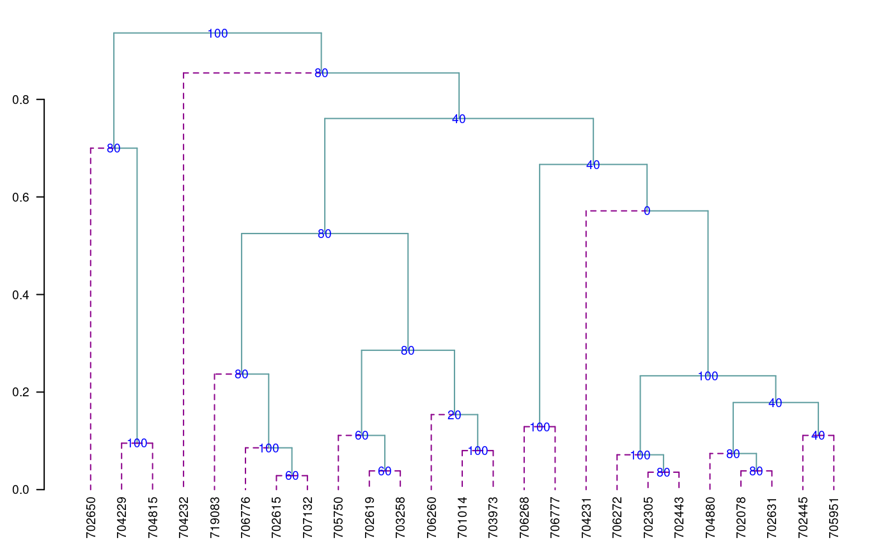

Introduction to agricolae
Felipe de Mendiburu1, Muhammad Yaseen2
2020-05-02
Source:vignettes/Intro_agricolae.Rmd
Intro_agricolae.Rmd
- Professor of the Academic Department of Statistics and Informatics of the Faculty of Economics and Planning.National University Agraria La Molina-PERU.
- Department of Mathematics and Statistics, University of Agriculture Faisalabad, Pakistan.
Preface
The following document was developed to facilitate the use of agricolae package in R, it is understood that the user knows the statistical methodology for the design and analysis of experiments and through the use of the functions programmed in agricolae facilitate the generation of the field book experimental design and their analysis. The first part document describes the use of graph.freq role is complementary to the hist function of R functions to facilitate the collection of statistics and frequency table, statistics or grouped data histogram based training grouped data and graphics as frequency polygon or ogive; second part is the development of experimental plans and numbering of the units as used in an agricultural experiment; a third part corresponding to the comparative tests and finally provides agricolae miscellaneous additional functions applied in agricultural research and stability functions, soil consistency, late blight simulation and others.
Introduction
The package agricolae offers a broad functionality in the design of experiments, especially for experiments in agriculture and improvements of plants, which can also be used for other purposes. It contains the following designs: lattice, alpha, cyclic, balanced incomplete block designs, complete randomized blocks, Latin, Graeco-Latin, augmented block designs, split plot and strip plot. It also has several procedures of experimental data analysis, such as the comparisons of treatments of Waller-Duncan, Bonferroni, Duncan, Student-Newman-Keuls, Scheffe, Ryan, Einot and Gabriel and Welsch multiple range test or the classic LSD and Tukey; and non-parametric comparisons, such as Kruskal-Wallis, Friedman, Durbin, Median and Waerden, stability analysis, and other procedures applied in genetics, as well as procedures in biodiversity and descriptive statistics, Mendiburu (2009)
Installation
The main program of R should be already installed in the platform of your computer (Windows, Linux or MAC). If it is not installed yet, you can download it from the R project https://www.r-project.org/ of a repository CRAN.
install.packages("agricolae")
Once the agricolae package is installed, it needs to be made accessible to the current R session by the command:
library(agricolae)
For online help facilities or the details of a particular command (such as the function waller.test) you can type:
For a complete functionality, agricolae requires other packages
MASS: |
for the generalized inverse used in the function PBIB.test
|
nlme: |
for the methods REML and LM in PBIB.test
|
klaR: |
for the function triplot used in the function AMMI
|
cluster: |
for the use of the function consensus
|
AlgDesign: |
for the balanced incomplete block design design.bib
|
Use in R
Since agricolae is a package of functions, these are operational when they are called directly from the console of R and are integrated to all the base functions of R. The following orders are frequent:
detach(package:agricolae) # detach package agricole library(agricolae) # Load the package to the memory designs<-apropos("design") print(designs[substr(designs,1,6)=="design"], row.names=FALSE)
[1] "design.ab" "design.alpha" "design.bib" "design.crd"
[5] "design.cyclic" "design.dau" "design.graeco" "design.lattice"
[9] "design.lsd" "design.rcbd" "design.split" "design.strip"
[13] "design.youden" For the use of symbols that do not appear in the keyboard in Spanish, such as:
~, [, ], &, ^, |. <, >, {, }, \% or others, use the table ASCII code.library(agricolae) # Load the package to the memory:
In order to continue with the command line, do not forget to close the open windows with any R order. For help:
Data set in agricolae
A<-as.data.frame(data(package="agricolae")$results[,3:4]) A[,2]<-paste(substr(A[,2],1,35),"..",sep=".") head(A)
Item Title
1 CIC Data for late blight of potatoes...
2 Chz2006 Data amendment Carhuaz 2006...
3 ComasOxapampa Data AUDPC Comas - Oxapampa...
4 DC Data for the analysis of carolina g...
5 Glycoalkaloids Data Glycoalkaloids...
6 Hco2006 Data amendment Huanuco 2006...Descriptive statistics
The package agricolae provides some complementary functions to the R program, specifically for the management of the histogram and function hist.
Histogram
The histogram is constructed with the function graph.freq and is associated to other functions: polygon.freq, table.freq, stat.freq. See Figures: @ref(fig:DescriptStats2), @ref(fig:DescriptStats6) and @ref(fig:DescriptStats7) for more details.
Example. Data generated in R . (students’ weight).
weight<-c( 68, 53, 69.5, 55, 71, 63, 76.5, 65.5, 69, 75, 76, 57, 70.5, 71.5, 56, 81.5, 69, 59, 67.5, 61, 68, 59.5, 56.5, 73, 61, 72.5, 71.5, 59.5, 74.5, 63) print(summary(weight))
Min. 1st Qu. Median Mean 3rd Qu. Max.
53.00 59.88 68.00 66.45 71.50 81.50 oldpar<-par(mfrow=c(1,2),mar=c(4,4,0,1),cex=0.6) h1<- graph.freq(weight,col=colors()[84],frequency=1,las=2, ylim=c(0,12),ylab="Frequency") x<-h1$breaks h2<- plot(h1, frequency =2, axes= FALSE,ylim=c(0,0.4),xlab="weight",ylab="Relative (%)") polygon.freq(h2, col=colors()[84], lwd=2, frequency =2) axis(1,x,cex=0.6,las=2) y<-seq(0,0.4,0.1) axis(2, y,y*100,cex=0.6,las=1)

Absolute and relative frequency with polygon
par(oldpar)
Statistics and Frequency tables
Statistics: mean, median, mode and standard deviation of the grouped data.
stat.freq(h1)
$variance
[1] 51.37655
$mean
[1] 66.6
$median
[1] 68.36
$mode
[- -] mode
[1,] 67.4 72.2 70.45455Frequency tables: Use table.freq, stat.freq and summary
The table.freq is equal to summary()
Limits class: Lower and Upper
Class point: Main
Frequency: Frequency
Percentage frequency: Percentage
Cumulative frequency: CF
Cumulative percentage frequency: CPF
Lower Upper Main Frequency Percentage CF CPF
53.0 57.8 55.4 5 16.7 5 16.7
57.8 62.6 60.2 5 16.7 10 33.3
62.6 67.4 65.0 3 10.0 13 43.3
67.4 72.2 69.8 10 33.3 23 76.7
72.2 77.0 74.6 6 20.0 29 96.7
77.0 81.8 79.4 1 3.3 30 100.0Histogram manipulation functions
You can extract information from a histogram such as class intervals intervals.freq, attract new intervals with the sturges.freq function or to join classes with join.freq function. It is also possible to reproduce the graph with the same creator graph.freq or function plot and overlay normal function with normal.freq be it a histogram in absolute scale, relative or density . The following examples illustrates these properties.
sturges.freq(weight)
$maximum
[1] 81.5
$minimum
[1] 53
$amplitude
[1] 29
$classes
[1] 6
$interval
[1] 4.8
$breaks
[1] 53.0 57.8 62.6 67.4 72.2 77.0 81.8intervals.freq(h1)
lower upper
[1,] 53.0 57.8
[2,] 57.8 62.6
[3,] 62.6 67.4
[4,] 67.4 72.2
[5,] 72.2 77.0
[6,] 77.0 81.8 Lower Upper Main Frequency Percentage CF CPF
1 53.0 67.4 60.2 13 43.3 13 43.3
2 67.4 72.2 69.8 10 33.3 23 76.7
3 72.2 77.0 74.6 6 20.0 29 96.7
4 77.0 81.8 79.4 1 3.3 30 100.0oldpar<-par(mfrow=c(1,2),mar=c(4,4,0,1),cex=0.8) plot(h3, frequency=2,col=colors()[84],ylim=c(0,0.6),axes=FALSE,xlab="weight",ylab="%") y<-seq(0,0.6,0.2) axis(2,y,y*100,las=2) axis(1,h3$breaks) normal.freq(h3,frequency=2,col=colors()[90]) ogive.freq(h3,col=colors()[84],xlab="weight")
Join frequency and relative frequency with normal and Ogive
weight RCF
1 53.0 0.0000
2 67.4 0.4333
3 72.2 0.7667
4 77.0 0.9667
5 81.8 1.0000
6 86.6 1.0000par(oldpar)
hist() and graph.freq() based on grouped data
The hist and graph.freq have the same characteristics, only f2 allows build histogram from grouped data.
0-10 (3)
10-20 (8)
20-30 (15)
30-40 (18)
40-50 (6)
oldpar<-par(mfrow=c(1,2),mar=c(4,3,2,1),cex=0.6) h4<-hist(weight,xlab="Classes (h4)") table.freq(h4) # this is possible # hh<-graph.freq(h4,plot=FALSE) # summary(hh) # new class classes <- c(0, 10, 20, 30, 40, 50) freq <- c(3, 8, 15, 18, 6) h5 <- graph.freq(classes,counts=freq, xlab="Classes (h5)",main="Histogram grouped data")
hist() function and histogram defined class
par(oldpar)
Lower Upper Main Frequency Percentage CF CPF
0 10 5 3 6 3 6
10 20 15 8 16 11 22
20 30 25 15 30 26 52
30 40 35 18 36 44 88
40 50 45 6 12 50 100Experimental Designs
The package agricolae presents special functions for the creation of the field book for experimental designs. Due to the random generation, this package is quite used in agricultural research.
For this generation, certain parameters are required, as for example the name of each treatment, the number of repetitions, and others, according to the design (Le Clerg et al., 1962; Cochran and Cox, 1992; Kuehl, 2000; Montgomery, 2002). There are other parameters of random generation, as the seed to reproduce the same random generation or the generation method (See the reference manual of agricolae).
Important parameters in the generation of design:
| series: | A constant that is used to set numerical tag blocks , eg number = 2, the labels will be : 101, 102, for the first row or block, 201, 202, for the following , in the case of completely randomized design, the numbering is sequencial. |
| design: | Some features of the design requested agricolae be applied specifically to design.ab(factorial) or design.split (split plot) and their possible values are: “rcbd”, “crd” and “lsd”. |
| seed: | The seed for the random generation and its value is any real value, if the value is zero, it has no reproducible generation, in this case copy of value of the outdesign$parameters. |
| kinds: | the random generation method, by default “Super-Duper”. |
| first: | For some designs is not required random the first repetition, especially in the block design, if you want to switch to random, change to TRUE. |
| randomization: | TRUE or FALSE. If false, randomization is not performed |
Output design:
| parameters: | the input to generation design, include the seed to generation random, if seed=0, the program generate one value and it is possible reproduce the design. |
| book: | field book |
| statistics: | the information statistics the design for example efficiency index, number of treatments. |
| sketch: | distribution of treatments in the field. |
| The enumeration of the plots | zigzag is a function that allows you to place the numbering of the plots in the direction of serpentine: The zigzag is output generated by one design: blocks, Latin square, graeco, split plot, strip plot, into blocks factorial, balanced incomplete block, cyclic lattice, alpha and augmented blocks. |
| fieldbook: | output zigzag, contain field book. |
Completely Randomized Design (CRD)
It generates completely a randomized design with equal or different repetition. “Random” uses the methods of number generation in R.The seed is by set.seed(seed, kinds). They only require the names of the treatments and the number of their repetitions and its parameters are:
str(design.crd)
function (trt, r, serie = 2, seed = 0, kinds = "Super-Duper", randomization = TRUE) trt <- c("A", "B", "C") repeticion <- c(4, 3, 4) outdesign <- design.crd(trt,r=repeticion,seed=777,serie=0) book1 <- outdesign$book head(book1)
plots r trt
1 1 1 C
2 2 1 A
3 3 1 B
4 4 2 A
5 5 3 A
6 6 2 CExcel:write.csv(book1,“book1.csv”,row.names=FALSE)
Randomized Complete Block Design (RCBD)
It generates field book and sketch to Randomized Complete Block Design. “Random” uses the methods of number generation in R.The seed is by set.seed(seed, kinds). They require the names of the treatments and the number of blocks and its parameters are:
str(design.rcbd)
function (trt, r, serie = 2, seed = 0, kinds = "Super-Duper", first = TRUE,
continue = FALSE, randomization = TRUE) trt <- c("A", "B", "C","D","E") repeticion <- 4 outdesign <- design.rcbd(trt,r=repeticion, seed=-513, serie=2) # book2 <- outdesign$book book2<- zigzag(outdesign) # zigzag numeration print(outdesign$sketch)
[,1] [,2] [,3] [,4] [,5]
[1,] "E" "B" "D" "A" "C"
[2,] "B" "A" "D" "C" "E"
[3,] "C" "E" "A" "B" "D"
[4,] "D" "C" "E" "B" "A" [,1] [,2] [,3] [,4] [,5]
[1,] 101 102 103 104 105
[2,] 205 204 203 202 201
[3,] 301 302 303 304 305
[4,] 405 404 403 402 401Latin Square Design
It generates Latin Square Design. “Random” uses the methods of number generation in R.The seed is by set.seed(seed, kinds). They require the names of the treatments and its parameters are:
str(design.lsd)
function (trt, serie = 2, seed = 0, kinds = "Super-Duper", first = TRUE,
randomization = TRUE) trt <- c("A", "B", "C", "D") outdesign <- design.lsd(trt, seed=543, serie=2) print(outdesign$sketch)
[,1] [,2] [,3] [,4]
[1,] "B" "C" "A" "D"
[2,] "D" "A" "C" "B"
[3,] "C" "D" "B" "A"
[4,] "A" "B" "D" "C" Graeco-Latin Designs
A graeco-latin square is a \(k \times k\) pattern that permits the study of \(k\) treatments simultaneously with three different blocking variables, each at \(k\) levels. The function is only for squares of the odd numbers and even numbers (4, 8, 10 and 12). They require the names of the treatments of each factor of study and its parameters are:
str(design.graeco)
function (trt1, trt2, serie = 2, seed = 0, kinds = "Super-Duper", randomization = TRUE) trt1 <- c("A", "B", "C", "D") trt2 <- 1:4 outdesign <- design.graeco(trt1,trt2, seed=543, serie=2) print(outdesign$sketch)
[,1] [,2] [,3] [,4]
[1,] "NA 2" "NA 4" "NA 3" "NA 1"
[2,] "NA 3" "NA 1" "NA 2" "NA 4"
[3,] "NA 1" "NA 3" "NA 4" "NA 2"
[4,] "NA 4" "NA 2" "NA 1" "NA 3"Youden Square Design
Such designs are referred to as Youden squares since they were introduced by Youden (1937) after Yates (1936) considered the special case of column equal to number treatment minus 1. “Random” uses the methods of number generation in R. The seed is by set.seed(seed, kinds). They require the names of the treatments of each factor of study and its parameters are:
str(design.youden)
function (trt, r, serie = 2, seed = 0, kinds = "Super-Duper", first = TRUE,
randomization = TRUE) varieties<-c("perricholi","yungay","maria bonita","tomasa") r<-3 outdesign <-design.youden(varieties,r,serie=2,seed=23) print(outdesign$sketch)
[,1] [,2] [,3]
[1,] "maria bonita" "tomasa" "perricholi"
[2,] "yungay" "maria bonita" "tomasa"
[3,] "perricholi" "yungay" "maria bonita"
[4,] "tomasa" "perricholi" "yungay" book <- outdesign$book print(book) # field book.
plots row col varieties
1 101 1 1 maria bonita
2 102 1 2 tomasa
3 103 1 3 perricholi
4 201 2 1 yungay
5 202 2 2 maria bonita
6 203 2 3 tomasa
7 301 3 1 perricholi
8 302 3 2 yungay
9 303 3 3 maria bonita
10 401 4 1 tomasa
11 402 4 2 perricholi
12 403 4 3 yungayprint(matrix(as.numeric(book[,1]),byrow = TRUE, ncol = r))
[,1] [,2] [,3]
[1,] 101 102 103
[2,] 201 202 203
[3,] 301 302 303
[4,] 401 402 403Serpentine enumeration
book <- zigzag(outdesign) print(matrix(as.numeric(book[,1]),byrow = TRUE, ncol = r))
[,1] [,2] [,3]
[1,] 101 102 103
[2,] 203 202 201
[3,] 301 302 303
[4,] 403 402 401Balanced Incomplete Block Designs (BIBD)
Creates Randomized Balanced Incomplete Block Design. “Random” uses the methods of number generation in R. The seed is by set.seed(seed, kinds). They require the names of the treatments and the size of the block and its parameters are:
str(design.bib)
function (trt, k, r = NULL, serie = 2, seed = 0, kinds = "Super-Duper",
maxRep = 20, randomization = TRUE) trt <- c("A", "B", "C", "D", "E" ) k <- 4 outdesign <- design.bib(trt,k, seed=543, serie=2)
Parameters BIB
==============
Lambda : 3
treatmeans : 5
Block size : 4
Blocks : 5
Replication: 4
Efficiency factor 0.9375
<<< Book >>>book5 <- outdesign$book outdesign$statistics
lambda treatmeans blockSize blocks r Efficiency
values 3 5 4 5 4 0.9375outdesign$parameters
$design
[1] "bib"
$trt
[1] "A" "B" "C" "D" "E"
$k
[1] 4
$serie
[1] 2
$seed
[1] 543
$kinds
[1] "Super-Duper"According to the produced information, they are five blocks of size 4, being the matrix:
outdesign$sketch
[,1] [,2] [,3] [,4]
[1,] "B" "C" "E" "A"
[2,] "C" "D" "B" "A"
[3,] "A" "D" "E" "B"
[4,] "E" "C" "D" "B"
[5,] "D" "C" "E" "A" It can be observed that the treatments have four repetitions. The parameter lambda has three repetitions, which means that a couple of treatments are together on three occasions. For example, B and E are found in the blocks I, II and V.
Cyclic Designs
They require the names of the treatments, the size of the block and the number of repetitions. This design is used for 6 to 30 treatments. The repetitions are a multiple of the size of the block; if they are six treatments and the size is 3, then the repetitions can be 6, 9, 12, etc. and its parameters are:
str(design.cyclic)
function (trt, k, r, serie = 2, rowcol = FALSE, seed = 0, kinds = "Super-Duper",
randomization = TRUE) trt <- c("A", "B", "C", "D", "E", "F" ) outdesign <- design.cyclic(trt,k=3, r=6, seed=543, serie=2)
cyclic design
Generator block basic:
1 2 4
1 3 2
Parameters
===================
treatmeans : 6
Block size : 3
Replication: 6 book6 <- outdesign$book outdesign$sketch[[1]]
[,1] [,2] [,3]
[1,] "F" "D" "C"
[2,] "C" "B" "E"
[3,] "D" "E" "A"
[4,] "B" "E" "F"
[5,] "A" "F" "C"
[6,] "B" "A" "D" outdesign$sketch[[2]]
[,1] [,2] [,3]
[1,] "A" "F" "E"
[2,] "A" "C" "B"
[3,] "A" "F" "B"
[4,] "C" "D" "E"
[5,] "E" "D" "F"
[6,] "D" "C" "B" 12 blocks of 4 treatments each have been generated.
Serpentine enumeration
[,1] [,2] [,3]
[1,] 101 102 103
[2,] 106 105 104
[3,] 107 108 109
[4,] 112 111 110
[5,] 113 114 115
[6,] 118 117 116t(X[,,2])
[,1] [,2] [,3]
[1,] 201 202 203
[2,] 206 205 204
[3,] 207 208 209
[4,] 212 211 210
[5,] 213 214 215
[6,] 218 217 216Lattice Designs
SIMPLE and TRIPLE lattice designs. It randomizes treatments in \(k \times k\) lattice. They require a number of treatments of a perfect square; for example 9, 16, 25, 36, 49, etc. and its parameters are:
str(design.lattice)
function (trt, r = 3, serie = 2, seed = 0, kinds = "Super-Duper", randomization = TRUE) They can generate a simple lattice (2 rep.) or a triple lattice (3 rep.) generating a triple lattice design for 9 treatments \(3 \times 3\)
trt<-letters[1:9] outdesign <-design.lattice(trt, r = 3, serie = 2, seed = 33, kinds = "Super-Duper")
Lattice design, triple 3 x 3
Efficiency factor
(E ) 0.7272727
<<< Book >>>book7 <- outdesign$book outdesign$parameters
$design
[1] "lattice"
$type
[1] "triple"
$trt
[1] "a" "b" "c" "d" "e" "f" "g" "h" "i"
$r
[1] 3
$serie
[1] 2
$seed
[1] 33
$kinds
[1] "Super-Duper"outdesign$sketch
$rep1
[,1] [,2] [,3]
[1,] "g" "c" "a"
[2,] "f" "b" "h"
[3,] "i" "e" "d"
$rep2
[,1] [,2] [,3]
[1,] "g" "f" "i"
[2,] "a" "h" "d"
[3,] "c" "b" "e"
$rep3
[,1] [,2] [,3]
[1,] "g" "h" "e"
[2,] "c" "f" "d"
[3,] "a" "b" "i" head(book7)
plots r block trt
1 101 1 1 g
2 102 1 1 c
3 103 1 1 a
4 104 1 2 f
5 105 1 2 b
6 106 1 2 hAlpha Designs
Generates an alpha designs starting from the alpha design fixing under the series formulated by Patterson and Williams. These designs are generated by the alpha arrangements. They are similar to the lattice designs, but the tables are rectangular \(s\) by \(k\) (with \(s\) blocks and \(k<s\) columns. The number of treatments should be equal to \(s \times k\) and all the experimental units \(r \times s \times k\) (\(r\) replications) and its parameters are:
str(design.alpha)
function (trt, k, r, serie = 2, seed = 0, kinds = "Super-Duper", randomization = TRUE) trt <- letters[1:15] outdesign <- design.alpha(trt,k=3,r=2,seed=543)
Alpha Design (0,1) - Serie I
Parameters Alpha Design
=======================
Treatmeans : 15
Block size : 3
Blocks : 5
Replication: 2
Efficiency factor
(E ) 0.6363636
<<< Book >>>book8 <- outdesign$book outdesign$statistics
treatments blocks Efficiency
values 15 5 0.6363636outdesign$sketch
$rep1
[,1] [,2] [,3]
[1,] "i" "g" "m"
[2,] "f" "o" "h"
[3,] "n" "j" "b"
[4,] "a" "c" "k"
[5,] "e" "l" "d"
$rep2
[,1] [,2] [,3]
[1,] "g" "f" "k"
[2,] "e" "j" "a"
[3,] "m" "c" "l"
[4,] "n" "d" "o"
[5,] "i" "h" "b" [,1] [,2] [,3]
[1,] 101 102 103
[2,] 104 105 106
[3,] 107 108 109
[4,] 110 111 112
[5,] 113 114 115t(A[,,2])
[,1] [,2] [,3]
[1,] 201 202 203
[2,] 204 205 206
[3,] 207 208 209
[4,] 210 211 212
[5,] 213 214 215Augmented Block Designs
These are designs for two types of treatments: the control treatments (common) and the increased treatments. The common treatments are applied in complete randomized blocks, and the increased treatments, at random. Each treatment should be applied in any block once only. It is understood that the common treatments are of a greater interest; the standard error of the difference is much smaller than when between two increased ones in different blocks. The function design.dau() achieves this purpose and its parameters are:
str(design.dau)
function (trt1, trt2, r, serie = 2, seed = 0, kinds = "Super-Duper", name = "trt",
randomization = TRUE) rm(list=ls()) trt1 <- c("A", "B", "C", "D") trt2 <- c("t","u","v","w","x","y","z") outdesign <- design.dau(trt1, trt2, r=5, seed=543, serie=2) book9 <- outdesign$book with(book9,by(trt, block,as.character))
block: 1
[1] "C" "B" "v" "D" "t" "A"
------------------------------------------------------------
block: 2
[1] "D" "u" "A" "B" "x" "C"
------------------------------------------------------------
block: 3
[1] "B" "y" "C" "A" "D"
------------------------------------------------------------
block: 4
[1] "A" "B" "C" "D" "w"
------------------------------------------------------------
block: 5
[1] "z" "A" "C" "D" "B"Serpentine enumeration
block: 1
[1] "101" "102" "103" "104" "105" "106"
------------------------------------------------------------
block: 2
[1] "206" "205" "204" "203" "202" "201"
------------------------------------------------------------
block: 3
[1] "301" "302" "303" "304" "305"
------------------------------------------------------------
block: 4
[1] "405" "404" "403" "402" "401"
------------------------------------------------------------
block: 5
[1] "501" "502" "503" "504" "505"head(book)
plots block trt
1 101 1 C
2 102 1 B
3 103 1 v
4 104 1 D
5 105 1 t
6 106 1 AFor augmented ompletely randomized design, use the function design.crd().
Split Plot Designs
These designs have two factors, one is applied in plots and is defined as trt1 in a randomized complete block design; and a second factor as trt2 , which is applied in the subplots of each plot applied at random. The function design.split() permits to find the experimental plan for this design and its parameters are:
str(design.split)
function (trt1, trt2, r = NULL, design = c("rcbd", "crd", "lsd"), serie = 2,
seed = 0, kinds = "Super-Duper", first = TRUE, randomization = TRUE) Aplication
trt1<-c("A","B","C","D") trt2<-c("a","b","c") outdesign <-design.split(trt1,trt2,r=3,serie=2,seed=543) book10 <- outdesign$book head(book10)
plots splots block trt1 trt2
1 101 1 1 D b
2 101 2 1 D a
3 101 3 1 D c
4 102 1 1 B a
5 102 2 1 B b
6 102 3 1 B cStrip-Plot Designs
These designs are used when there are two types of treatments (factors) and are applied separately in large plots, called bands, in a vertical and horizontal direction of the block, obtaining the divided blocks. Each block constitutes a repetition and its parameters are:
str(design.strip)
function (trt1, trt2, r, serie = 2, seed = 0, kinds = "Super-Duper", randomization = TRUE) Aplication
trt1<-c("A","B","C","D") trt2<-c("a","b","c") outdesign <-design.strip(trt1,trt2,r=3,serie=2,seed=543) book11 <- outdesign$book head(book11)
plots block trt1 trt2
1 101 1 D b
2 102 1 D a
3 103 1 D c
4 104 1 B b
5 105 1 B a
6 106 1 B ct3<-paste(book11$trt1, book11$trt2) B1<-t(matrix(t3[1:12],c(4,3))) B2<-t(matrix(t3[13:24],c(3,4))) B3<-t(matrix(t3[25:36],c(3,4))) print(B1)
[,1] [,2] [,3] [,4]
[1,] "D b" "D a" "D c" "B b"
[2,] "B a" "B c" "A b" "A a"
[3,] "A c" "C b" "C a" "C c"print(B2)
[,1] [,2] [,3]
[1,] "C b" "C a" "C c"
[2,] "B b" "B a" "B c"
[3,] "A b" "A a" "A c"
[4,] "D b" "D a" "D c"print(B3)
[,1] [,2] [,3]
[1,] "A c" "A b" "A a"
[2,] "B c" "B b" "B a"
[3,] "D c" "D b" "D a"
[4,] "C c" "C b" "C a"Serpentine enumeration
plots block trt1 trt2
1 101 1 D b
2 102 1 D a
3 103 1 D c
4 106 1 B b
5 105 1 B a
6 104 1 B c [,1] [,2] [,3]
[1,] 101 102 103
[2,] 106 105 104
[3,] 107 108 109
[4,] 112 111 110t(X[,,2])
[,1] [,2] [,3]
[1,] 201 202 203
[2,] 206 205 204
[3,] 207 208 209
[4,] 212 211 210t(X[,,3])
[,1] [,2] [,3]
[1,] 301 302 303
[2,] 306 305 304
[3,] 307 308 309
[4,] 312 311 310Factorial
The full factorial of n factors applied to an experimental design (CRD, RCBD and LSD) is common and this procedure in agricolae applies the factorial to one of these three designs and its parameters are:
str(design.ab)
function (trt, r = NULL, serie = 2, design = c("rcbd", "crd", "lsd"), seed = 0,
kinds = "Super-Duper", first = TRUE, randomization = TRUE) To generate the factorial, you need to create a vector of levels of each factor, the method automatically generates up to 25 factors and \(r\) repetitions.
trt <- c (4,2,3) # three factors with 4,2 and 3 levels.
to crd and rcbd designs, it is necessary to value \(r\) as the number of repetitions, this can be a vector if unequal to equal or constant repetition (recommended).
trt<-c(3,2) # factorial 3x2 outdesign <-design.ab(trt, r=3, serie=2) book12 <- outdesign$book head(book12) # print of the field book
plots block A B
1 101 1 2 2
2 102 1 2 1
3 103 1 3 2
4 104 1 1 2
5 105 1 1 1
6 106 1 3 1Serpentine enumeration
plots block A B
1 101 1 2 2
2 102 1 2 1
3 103 1 3 2
4 104 1 1 2
5 105 1 1 1
6 106 1 3 1factorial \(2 \times 2 \times 2\) with 5 replications in completely randomized design.
[1] "parameters" "book" crd$parameters
$design
[1] "factorial"
$trt
[1] "1 1 1" "1 1 2" "1 2 1" "1 2 2" "2 1 1" "2 1 2" "2 2 1" "2 2 2"
$r
[1] 5 5 5 5 5 5 5 5
$serie
[1] 2
$seed
[1] 1923434691
$kinds
[1] "Super-Duper"
[[7]]
[1] TRUE
$applied
[1] "crd"head(crd$book)
plots r A B C
1 101 1 2 2 2
2 102 2 2 2 2
3 103 1 2 1 1
4 104 1 1 2 1
5 105 1 1 1 1
6 106 2 1 2 1Multiple Comparisons
For the analyses, the following functions of agricolae are used: LSD.test, HSD.test, duncan.test, scheffe.test, waller.test, SNK.test, REGW.test (Hsu, 1996; Steel et al., 1997) and durbin.test, kruskal, friedman, waerden.test and Median.test (Conover, 1999).
For every statistical analysis, the data should be organized in columns. For the demonstration, the agricolae database will be used.
The sweetpotato data correspond to a completely random experiment in field with plots of 50 sweet potato plants, subjected to the virus effect and to a control without virus (See the reference manual of the package).
[1] 17.1666[1] 27.625Model parameters: Degrees of freedom and variance of the error:
df<-df.residual(model) MSerror<-deviance(model)/df
The Least Significant Difference (LSD)
It includes the multiple comparison through the method of the minimum significant difference (Least Significant Difference), (Steel et al., 1997).
# comparison <- LSD.test(yield,virus,df,MSerror) LSD.test(model, "virus",console=TRUE)
Study: model ~ "virus"
LSD t Test for yield
Mean Square Error: 22.48917
virus, means and individual ( 95 %) CI
yield std r LCL UCL Min Max
cc 24.40000 3.609709 3 18.086268 30.71373 21.7 28.5
fc 12.86667 2.159475 3 6.552935 19.18040 10.6 14.9
ff 36.33333 7.333030 3 30.019601 42.64707 28.0 41.8
oo 36.90000 4.300000 3 30.586268 43.21373 32.1 40.4
Alpha: 0.05 ; DF Error: 8
Critical Value of t: 2.306004
least Significant Difference: 8.928965
Treatments with the same letter are not significantly different.
yield groups
oo 36.90000 a
ff 36.33333 a
cc 24.40000 b
fc 12.86667 cIn the function LSD.test, the multiple comparison was carried out. In order to obtain the probabilities of the comparisons, it should be indicated that groups are not required; thus:
# comparison <- LSD.test(yield, virus,df, MSerror, group=FALSE) outLSD <-LSD.test(model, "virus", group=FALSE,console=TRUE)
Study: model ~ "virus"
LSD t Test for yield
Mean Square Error: 22.48917
virus, means and individual ( 95 %) CI
yield std r LCL UCL Min Max
cc 24.40000 3.609709 3 18.086268 30.71373 21.7 28.5
fc 12.86667 2.159475 3 6.552935 19.18040 10.6 14.9
ff 36.33333 7.333030 3 30.019601 42.64707 28.0 41.8
oo 36.90000 4.300000 3 30.586268 43.21373 32.1 40.4
Alpha: 0.05 ; DF Error: 8
Critical Value of t: 2.306004
Comparison between treatments means
difference pvalue signif. LCL UCL
cc - fc 11.5333333 0.0176 * 2.604368 20.462299
cc - ff -11.9333333 0.0151 * -20.862299 -3.004368
cc - oo -12.5000000 0.0121 * -21.428965 -3.571035
fc - ff -23.4666667 0.0003 *** -32.395632 -14.537701
fc - oo -24.0333333 0.0003 *** -32.962299 -15.104368
ff - oo -0.5666667 0.8873 -9.495632 8.362299Signif. codes:
0 * 0.001 ** 0.01 * 0.05 . 0.1 ’ ’ 1**
$statistics
MSerror Df Mean CV t.value LSD
22 8 28 17 2.3 8.9
$parameters
test p.ajusted name.t ntr alpha
Fisher-LSD none virus 4 0.05
$means
yield std r LCL UCL Min Max Q25 Q50 Q75
cc 24 3.6 3 18.1 31 22 28 22 23 26
fc 13 2.2 3 6.6 19 11 15 12 13 14
ff 36 7.3 3 30.0 43 28 42 34 39 40
oo 37 4.3 3 30.6 43 32 40 35 38 39
$comparison
difference pvalue signif. LCL UCL
cc - fc 11.53 0.0176 * 2.6 20.5
cc - ff -11.93 0.0151 * -20.9 -3.0
cc - oo -12.50 0.0121 * -21.4 -3.6
fc - ff -23.47 0.0003 *** -32.4 -14.5
fc - oo -24.03 0.0003 *** -33.0 -15.1
ff - oo -0.57 0.8873 -9.5 8.4
$groups
NULL
attr(,"class")
[1] "group"holm, hommel, hochberg, bonferroni, BH, BY, fdr
With the function LSD.test we can make adjustments to the probabilities found, as for example the adjustment by Bonferroni, holm and other options see Adjust P-values for Multiple Comparisons, function ‘p.adjust(stats)’ (R Core Team, 2020).
LSD.test(model, "virus", group=FALSE, p.adj= "bon",console=TRUE)
Study: model ~ "virus"
LSD t Test for yield
P value adjustment method: bonferroni
Mean Square Error: 22
virus, means and individual ( 95 %) CI
yield std r LCL UCL Min Max
cc 24 3.6 3 18.1 31 22 28
fc 13 2.2 3 6.6 19 11 15
ff 36 7.3 3 30.0 43 28 42
oo 37 4.3 3 30.6 43 32 40
Alpha: 0.05 ; DF Error: 8
Critical Value of t: 3.5
Comparison between treatments means
difference pvalue signif. LCL UCL
cc - fc 11.53 0.1058 -1.9 25.00
cc - ff -11.93 0.0904 . -25.4 1.54
cc - oo -12.50 0.0725 . -26.0 0.97
fc - ff -23.47 0.0018 ** -36.9 -10.00
fc - oo -24.03 0.0015 ** -37.5 -10.56
ff - oo -0.57 1.0000 -14.0 12.90 yield groups
oo 37 a
ff 36 a
cc 24 b
fc 13 c difference pvalue signif.
cc - fc 11.53 0.0484 *
cc - ff -11.93 0.0484 *
cc - oo -12.50 0.0484 *
fc - ff -23.47 0.0015 **
fc - oo -24.03 0.0015 **
ff - oo -0.57 0.8873 Other comparison tests can be applied, such as duncan, Student-Newman-Keuls, tukey and waller-duncan
For Duncan, use the function duncan.test; for Student-Newman-Keuls, the function SNK.test; for Tukey, the function HSD.test; for Scheffe, the function scheffe.test and for Waller-Duncan, the function waller.test. The arguments are the same. Waller also requires the value of F-calculated of the ANOVA treatments. If the model is used as a parameter, this is no longer necessary.
Duncan’s New Multiple-Range Test
It corresponds to the Duncan’s Test (Steel et al., 1997).
duncan.test(model, "virus",console=TRUE)
Study: model ~ "virus"
Duncan's new multiple range test
for yield
Mean Square Error: 22
virus, means
yield std r Min Max
cc 24 3.6 3 22 28
fc 13 2.2 3 11 15
ff 36 7.3 3 28 42
oo 37 4.3 3 32 40
Alpha: 0.05 ; DF Error: 8
Critical Range
2 3 4
8.9 9.3 9.5
Means with the same letter are not significantly different.
yield groups
oo 37 a
ff 36 a
cc 24 b
fc 13 cStudent-Newman-Keuls
Student, Newman and Keuls helped to improve the Newman-Keuls test of 1939, which was known as the Keuls method (Steel et al., 1997).
# SNK.test(model, "virus", alpha=0.05,console=TRUE) SNK.test(model, "virus", group=FALSE,console=TRUE)
Study: model ~ "virus"
Student Newman Keuls Test
for yield
Mean Square Error: 22
virus, means
yield std r Min Max
cc 24 3.6 3 22 28
fc 13 2.2 3 11 15
ff 36 7.3 3 28 42
oo 37 4.3 3 32 40
Comparison between treatments means
difference pvalue signif. LCL UCL
cc - fc 11.53 0.0176 * 2.6 20.5
cc - ff -11.93 0.0151 * -20.9 -3.0
cc - oo -12.50 0.0291 * -23.6 -1.4
fc - ff -23.47 0.0008 *** -34.5 -12.4
fc - oo -24.03 0.0012 ** -36.4 -11.6
ff - oo -0.57 0.8873 -9.5 8.4Ryan, Einot and Gabriel and Welsch
Multiple range tests for all pairwise comparisons, to obtain a confident inequalities multiple range tests (Hsu, 1996).
# REGW.test(model, "virus", alpha=0.05,console=TRUE) REGW.test(model, "virus", group=FALSE,console=TRUE)
Study: model ~ "virus"
Ryan, Einot and Gabriel and Welsch multiple range test
for yield
Mean Square Error: 22
virus, means
yield std r Min Max
cc 24 3.6 3 22 28
fc 13 2.2 3 11 15
ff 36 7.3 3 28 42
oo 37 4.3 3 32 40
Comparison between treatments means
difference pvalue signif. LCL UCL
cc - fc 11.53 0.0350 * 0.91 22.16
cc - ff -11.93 0.0360 * -23.00 -0.87
cc - oo -12.50 0.0482 * -24.90 -0.10
fc - ff -23.47 0.0006 *** -34.09 -12.84
fc - oo -24.03 0.0007 *** -35.10 -12.97
ff - oo -0.57 0.9873 -11.19 10.06Tukey’s W Procedure (HSD)
This studentized range test, created by Tukey in 1953, is known as the Tukey’s HSD (Honestly Significant Differences) (Steel et al., 1997).
outHSD<- HSD.test(model, "virus",console=TRUE)
Study: model ~ "virus"
HSD Test for yield
Mean Square Error: 22
virus, means
yield std r Min Max
cc 24 3.6 3 22 28
fc 13 2.2 3 11 15
ff 36 7.3 3 28 42
oo 37 4.3 3 32 40
Alpha: 0.05 ; DF Error: 8
Critical Value of Studentized Range: 4.5
Minimun Significant Difference: 12
Treatments with the same letter are not significantly different.
yield groups
oo 37 a
ff 36 ab
cc 24 bc
fc 13 coutHSD$statistics
MSerror Df Mean CV MSD
22 8 28 17 12
$parameters
test name.t ntr StudentizedRange alpha
Tukey virus 4 4.5 0.05
$means
yield std r Min Max Q25 Q50 Q75
cc 24 3.6 3 22 28 22 23 26
fc 13 2.2 3 11 15 12 13 14
ff 36 7.3 3 28 42 34 39 40
oo 37 4.3 3 32 40 35 38 39
$comparison
NULL
$groups
yield groups
oo 37 a
ff 36 ab
cc 24 bc
fc 13 c
attr(,"class")
[1] "group"Tukey (HSD) for different repetition
Include the argument unbalanced = TRUE in the function. Valid for group = TRUE/FALSE
A<-sweetpotato[-c(4,5,7),] modelUnbalanced <- aov(yield ~ virus, data=A) outUn <-HSD.test(modelUnbalanced, "virus",group=FALSE, unbalanced = TRUE) print(outUn$comparison)
difference pvalue signif. LCL UCL
cc - fc 11.3 0.252 -8 30.6
cc - ff -9.2 0.386 -28 10.1
cc - oo -12.5 0.196 -32 6.8
fc - ff -20.5 0.040 * -40 -1.2
fc - oo -23.8 0.022 * -43 -4.5
ff - oo -3.3 0.917 -23 16.0 yield groups
oo 37 a
ff 34 a
cc 24 ab
fc 13 bIf this argument is not included, the probabilities of significance will not be consistent with the choice of groups.
Illustrative example of this inconsistency:
difference pvalue
cc - fc 11.3 0.317
cc - ff -9.2 0.297
cc - oo -12.5 0.096
fc - ff -20.5 0.071
fc - oo -23.8 0.033
ff - oo -3.3 0.885 yield groups
oo 37 a
ff 34 ab
cc 24 ab
fc 13 bWaller-Duncan’s Bayesian K-Ratio T-Test
Duncan continued the multiple comparison procedures, introducing the criterion of minimizing both experimental errors; for this, he used the Bayes’ theorem, obtaining one new test called Waller-Duncan (Waller and Duncan, 1969; Steel et al., 1997).
# variance analysis: anova(model)
Analysis of Variance Table
Response: yield
Df Sum Sq Mean Sq F value Pr(>F)
virus 3 1170 390 17.3 0.00073 ***
Residuals 8 180 22
---
Signif. codes: 0 '***' 0.001 '**' 0.01 '*' 0.05 '.' 0.1 ' ' 1with(sweetpotato,waller.test(yield,virus,df,MSerror,Fc= 17.345, group=FALSE,console=TRUE))
Study: yield ~ virus
Waller-Duncan K-ratio t Test for yield
This test minimizes the Bayes risk under additive loss and certain other assumptions
......
K ratio 100.0
Error Degrees of Freedom 8.0
Error Mean Square 22.5
F value 17.3
Critical Value of Waller 2.2
virus, means
yield std r Min Max
cc 24 3.6 3 22 28
fc 13 2.2 3 11 15
ff 36 7.3 3 28 42
oo 37 4.3 3 32 40
Comparison between treatments means
Difference significant
cc - fc 11.53 TRUE
cc - ff -11.93 TRUE
cc - oo -12.50 TRUE
fc - ff -23.47 TRUE
fc - oo -24.03 TRUE
ff - oo -0.57 FALSEIn another case with only invoking the model object:
outWaller <- waller.test(model, "virus", group=FALSE,console=FALSE)
The found object outWaller has information to make other procedures.
names(outWaller)
[1] "statistics" "parameters" "means" "comparison" "groups" print(outWaller$comparison)
Difference significant
cc - fc 11.53 TRUE
cc - ff -11.93 TRUE
cc - oo -12.50 TRUE
fc - ff -23.47 TRUE
fc - oo -24.03 TRUE
ff - oo -0.57 FALSEIt is indicated that the virus effect “ff” is not significant to the control “oo”.
outWaller$statistics
Mean Df CV MSerror F.Value Waller CriticalDifference
28 8 17 22 17 2.2 8.7Scheffe’s Test
This method, created by Scheffe in 1959, is very general for all the possible contrasts and their confidence intervals. The confidence intervals for the averages are very broad, resulting in a very conservative test for the comparison between treatment averages (Steel et al., 1997).
# analysis of variance: scheffe.test(model,"virus", group=TRUE,console=TRUE, main="Yield of sweetpotato\nDealt with different virus")
Study: Yield of sweetpotato
Dealt with different virus
Scheffe Test for yield
Mean Square Error : 22
virus, means
yield std r Min Max
cc 24 3.6 3 22 28
fc 13 2.2 3 11 15
ff 36 7.3 3 28 42
oo 37 4.3 3 32 40
Alpha: 0.05 ; DF Error: 8
Critical Value of F: 4.1
Minimum Significant Difference: 14
Means with the same letter are not significantly different.
yield groups
oo 37 a
ff 36 a
cc 24 ab
fc 13 bThe minimum significant value is very high. If you require the approximate probabilities of comparison, you can use the option group=FALSE.
outScheffe <- scheffe.test(model,"virus", group=FALSE, console=TRUE)
Study: model ~ "virus"
Scheffe Test for yield
Mean Square Error : 22
virus, means
yield std r Min Max
cc 24 3.6 3 22 28
fc 13 2.2 3 11 15
ff 36 7.3 3 28 42
oo 37 4.3 3 32 40
Alpha: 0.05 ; DF Error: 8
Critical Value of F: 4.1
Comparison between treatments means
Difference pvalue sig LCL UCL
cc - fc 11.53 0.0978 . -2 25.1
cc - ff -11.93 0.0855 . -25 1.6
cc - oo -12.50 0.0706 . -26 1.0
fc - ff -23.47 0.0023 ** -37 -9.9
fc - oo -24.03 0.0020 ** -38 -10.5
ff - oo -0.57 0.9991 -14 13.0Multiple comparison in factorial treatments
In a factorial combined effects of the treatments. Comparetive tests: LSD, HSD, Waller-Duncan, Duncan, Scheff\'e, SNK can be applied.
# modelABC <-aov (y ~ A * B * C, data)
# compare <-LSD.test (modelABC, c ("A", "B", "C"),console=TRUE)The comparison is the combination of A:B:C.
Data RCBD design with a factorial clone x nitrogen. The response variable yield.
yield <-scan (text = "6 7 9 13 16 20 8 8 9 7 8 8 12 17 18 10 9 12 9 9 9 14 18 21 11 12 11 8 10 10 15 16 22 9 9 9 " ) block <-gl (4, 9) clone <-rep (gl (3, 3, labels = c ("c1", "c2", "c3")), 4) nitrogen <-rep (gl (3, 1, labels = c ("n1", "n2", "n3")), 12) A <-data.frame (block, clone, nitrogen, yield) head (A)
block clone nitrogen yield
1 1 c1 n1 6
2 1 c1 n2 7
3 1 c1 n3 9
4 1 c2 n1 13
5 1 c2 n2 16
6 1 c2 n3 20outAOV <-aov (yield ~ block + clone * nitrogen, data = A)
anova (outAOV)
Analysis of Variance Table
Response: yield
Df Sum Sq Mean Sq F value Pr(>F)
block 3 21 6.9 5.82 0.00387 **
clone 2 498 248.9 209.57 6.4e-16 ***
nitrogen 2 54 27.0 22.76 2.9e-06 ***
clone:nitrogen 4 43 10.8 9.11 0.00013 ***
Residuals 24 29 1.2
---
Signif. codes: 0 '***' 0.001 '**' 0.01 '*' 0.05 '.' 0.1 ' ' 1outFactorial <-LSD.test (outAOV, c("clone", "nitrogen"), main = "Yield ~ block + nitrogen + clone + clone:nitrogen",console=TRUE)
Study: Yield ~ block + nitrogen + clone + clone:nitrogen
LSD t Test for yield
Mean Square Error: 1.2
clone:nitrogen, means and individual ( 95 %) CI
yield std r LCL UCL Min Max
c1:n1 7.5 1.29 4 6.4 8.6 6 9
c1:n2 8.5 1.29 4 7.4 9.6 7 10
c1:n3 9.0 0.82 4 7.9 10.1 8 10
c2:n1 13.5 1.29 4 12.4 14.6 12 15
c2:n2 16.8 0.96 4 15.6 17.9 16 18
c2:n3 20.2 1.71 4 19.1 21.4 18 22
c3:n1 9.5 1.29 4 8.4 10.6 8 11
c3:n2 9.5 1.73 4 8.4 10.6 8 12
c3:n3 10.2 1.50 4 9.1 11.4 9 12
Alpha: 0.05 ; DF Error: 24
Critical Value of t: 2.1
least Significant Difference: 1.6
Treatments with the same letter are not significantly different.
yield groups
c2:n3 20.2 a
c2:n2 16.8 b
c2:n1 13.5 c
c3:n3 10.2 d
c3:n1 9.5 de
c3:n2 9.5 de
c1:n3 9.0 def
c1:n2 8.5 ef
c1:n1 7.5 fAnalysis of Balanced Incomplete Blocks
This analysis can come from balanced or partially balanced designs. The function BIB.test is for balanced designs, and BIB.test, for partially balanced designs. In the following example, the agricolae data will be used (Joshi, 1987).
# Example linear estimation and design of experiments. (Joshi) # Institute of Social Sciences Agra, India # 6 varieties of wheat in 10 blocks of 3 plots each. block<-gl(10,3) variety<-c(1,2,3,1,2,4,1,3,5,1,4,6,1,5,6,2,3,6,2,4,5,2,5,6,3,4,5,3, 4,6) Y<-c(69,54,50,77,65,38,72,45,54,63,60,39,70,65,54,65,68,67,57,60,62, 59,65,63,75,62,61,59,55,56) head(cbind(block,variety,Y))
block variety Y
[1,] 1 1 69
[2,] 1 2 54
[3,] 1 3 50
[4,] 2 1 77
[5,] 2 2 65
[6,] 2 4 38BIB.test(block, variety, Y,console=TRUE)
ANALYSIS BIB: Y
Class level information
Block: 1 2 3 4 5 6 7 8 9 10
Trt : 1 2 3 4 5 6
Number of observations: 30
Analysis of Variance Table
Response: Y
Df Sum Sq Mean Sq F value Pr(>F)
block.unadj 9 467 51.9 0.90 0.547
trt.adj 5 1156 231.3 4.02 0.016 *
Residuals 15 863 57.5
---
Signif. codes: 0 '***' 0.001 '**' 0.01 '*' 0.05 '.' 0.1 ' ' 1
coefficient of variation: 13 %
Y Means: 60
variety, statistics
Y mean.adj SE r std Min Max
1 70 75 3.7 5 5.1 63 77
2 60 59 3.7 5 4.9 54 65
3 59 59 3.7 5 12.4 45 75
4 55 55 3.7 5 9.8 38 62
5 61 60 3.7 5 4.5 54 65
6 56 54 3.7 5 10.8 39 67
LSD test
Std.diff : 5.4
Alpha : 0.05
LSD : 11
Parameters BIB
Lambda : 2
treatmeans : 6
Block size : 3
Blocks : 10
Replication: 5
Efficiency factor 0.8
<<< Book >>>
Comparison between treatments means
Difference pvalue sig.
1 - 2 16.42 0.0080 **
1 - 3 16.58 0.0074 **
1 - 4 20.17 0.0018 **
1 - 5 15.08 0.0132 *
1 - 6 20.75 0.0016 **
2 - 3 0.17 0.9756
2 - 4 3.75 0.4952
2 - 5 -1.33 0.8070
2 - 6 4.33 0.4318
3 - 4 3.58 0.5142
3 - 5 -1.50 0.7836
3 - 6 4.17 0.4492
4 - 5 -5.08 0.3582
4 - 6 0.58 0.9148
5 - 6 5.67 0.3074
Treatments with the same letter are not significantly different.
Y groups
1 75 a
5 60 b
2 59 b
3 59 b
4 55 b
6 54 bfunction (block, trt, Y, test = c(“lsd”, “tukey”, “duncan”, “waller”, “snk”), alpha = 0.05, group = TRUE) LSD, Tukey Duncan, Waller-Duncan and SNK, can be used. The probabilities of the comparison can also be obtained. It should only be indicated: group=FALSE, thus:
out <-BIB.test(block, trt=variety, Y, test="tukey", group=FALSE, console=TRUE)
ANALYSIS BIB: Y
Class level information
Block: 1 2 3 4 5 6 7 8 9 10
Trt : 1 2 3 4 5 6
Number of observations: 30
Analysis of Variance Table
Response: Y
Df Sum Sq Mean Sq F value Pr(>F)
block.unadj 9 467 51.9 0.90 0.547
trt.adj 5 1156 231.3 4.02 0.016 *
Residuals 15 863 57.5
---
Signif. codes: 0 '***' 0.001 '**' 0.01 '*' 0.05 '.' 0.1 ' ' 1
coefficient of variation: 13 %
Y Means: 60
variety, statistics
Y mean.adj SE r std Min Max
1 70 75 3.7 5 5.1 63 77
2 60 59 3.7 5 4.9 54 65
3 59 59 3.7 5 12.4 45 75
4 55 55 3.7 5 9.8 38 62
5 61 60 3.7 5 4.5 54 65
6 56 54 3.7 5 10.8 39 67
Tukey
Alpha : 0.05
Std.err : 3.8
HSD : 17
Parameters BIB
Lambda : 2
treatmeans : 6
Block size : 3
Blocks : 10
Replication: 5
Efficiency factor 0.8
<<< Book >>>
Comparison between treatments means
Difference pvalue sig.
1 - 2 16.42 0.070 .
1 - 3 16.58 0.067 .
1 - 4 20.17 0.019 *
1 - 5 15.08 0.110
1 - 6 20.75 0.015 *
2 - 3 0.17 1.000
2 - 4 3.75 0.979
2 - 5 -1.33 1.000
2 - 6 4.33 0.962
3 - 4 3.58 0.983
3 - 5 -1.50 1.000
3 - 6 4.17 0.967
4 - 5 -5.08 0.927
4 - 6 0.58 1.000
5 - 6 5.67 0.891 names(out)
[1] "parameters" "statistics" "comparison" "means" "groups" rm(block,variety)
bar.group: out$groups
bar.err: out$means
Partially Balanced Incomplete Blocks
The function PBIB.test (Joshi, 1987), can be used for the lattice and alpha designs.
Consider the following case: Construct the alpha design with 30 treatments, 2 repetitions, and a block size equal to 3.
# alpha design Genotype<-paste("geno",1:30,sep="") r<-2 k<-3 plan<-design.alpha(Genotype,k,r,seed=5)
Alpha Design (0,1) - Serie I
Parameters Alpha Design
=======================
Treatmeans : 30
Block size : 3
Blocks : 10
Replication: 2
Efficiency factor
(E ) 0.62
<<< Book >>>The generated plan is plan$book. Suppose that the corresponding observation to each experimental unit is:
yield <-c(5,2,7,6,4,9,7,6,7,9,6,2,1,1,3,2,4,6,7,9,8,7,6,4,3,2,2,1,1, 2,1,1,2,4,5,6,7,8,6,5,4,3,1,1,2,5,4,2,7,6,6,5,6,4,5,7,6,5,5,4)
The data table is constructed for the analysis. In theory, it is presumed that a design is applied and the experiment is carried out; subsequently, the study variables are observed from each experimental unit.
data<-data.frame(plan$book,yield) # The analysis: modelPBIB <- with(data,PBIB.test(block, Genotype, replication, yield, k=3, group=TRUE, console=TRUE))
ANALYSIS PBIB: yield
Class level information
block : 20
Genotype : 30
Number of observations: 60
Estimation Method: Residual (restricted) maximum likelihood
Parameter Estimates
Variance
block:replication 3.8e+00
replication 6.1e-09
Residual 1.7e+00
Fit Statistics
AIC 214
BIC 260
-2 Res Log Likelihood -74
Analysis of Variance Table
Response: yield
Df Sum Sq Mean Sq F value Pr(>F)
Genotype 29 69.2 2.39 1.4 0.28
Residuals 11 18.7 1.70
Coefficient of variation: 29 %
yield Means: 4.5
Parameters PBIB
.
Genotype 30
block size 3
block/replication 10
replication 2
Efficiency factor 0.62
Comparison test lsd
Treatments with the same letter are not significantly different.
yield.adj groups
geno10 7.7 a
geno19 6.7 ab
geno1 6.7 ab
geno9 6.4 abc
geno18 6.1 abc
geno16 5.7 abcd
geno26 5.2 abcd
geno8 5.2 abcd
geno17 5.2 abcd
geno29 4.9 abcd
geno27 4.9 abcd
geno11 4.9 abcd
geno30 4.8 abcd
geno22 4.5 abcd
geno28 4.5 abcd
geno5 4.2 abcd
geno14 4.1 abcd
geno23 4.0 abcd
geno15 3.9 abcd
geno2 3.8 bcd
geno4 3.8 bcd
geno3 3.7 bcd
geno25 3.6 bcd
geno12 3.6 bcd
geno6 3.6 bcd
geno21 3.4 bcd
geno24 3.0 bcd
geno13 2.8 cd
geno20 2.7 cd
geno7 2.3 d
<<< to see the objects: means, comparison and groups. >>>The adjusted averages can be extracted from the modelPBIB.
head(modelPBIB$means)
The comparisons:
head(modelPBIB$comparison)
The data on the adjusted averages and their variation can be illustrated with the functions plot.group and bar.err. Since the created object is very similar to the objects generated by the multiple comparisons.
Analysis of balanced lattice 3x3, 9 treatments, 4 repetitions.
Create the data in a text file: latice3x3.txt and read with R:
trt<-c(1,8,5,5,2,9,2,7,3,6,4,9,4,6,9,8,7,6,1,5,8,3,2,7,3,7,2,1,3,4,6,4,9,5,8,1) yield<-c(48.76,10.83,12.54,11.07,22,47.43,27.67,30,13.78,37,42.37,39,14.46,30.69,42.01, 22,42.8,28.28,50,24,24,15.42,30,23.8,19.68,31,23,41,12.9,49.95,25,45.57,30,20,18,43.81) sqr<-rep(gl(4,3),3) block<-rep(1:12,3) modelLattice<-PBIB.test(block,trt,sqr,yield,k=3,console=TRUE, method="VC")
ANALYSIS PBIB: yield
Class level information
block : 12
trt : 9
Number of observations: 36
Estimation Method: Variances component model
Fit Statistics
AIC 265
BIC 298
Analysis of Variance Table
Response: yield
Df Sum Sq Mean Sq F value Pr(>F)
sqr 3 133 44 0.69 0.57361
trt.unadj 8 3749 469 7.24 0.00042 ***
block/sqr 8 368 46 0.71 0.67917
Residual 16 1036 65
---
Signif. codes: 0 '***' 0.001 '**' 0.01 '*' 0.05 '.' 0.1 ' ' 1
Coefficient of variation: 28 %
yield Means: 29
Parameters PBIB
.
trt 9
block size 3
block/sqr 3
sqr 4
Efficiency factor 0.75
Comparison test lsd
Treatments with the same letter are not significantly different.
yield.adj groups
1 44 a
9 39 ab
4 39 ab
7 32 bc
6 31 bc
2 26 cd
8 18 d
5 17 d
3 15 d
<<< to see the objects: means, comparison and groups. >>>The adjusted averages can be extracted from the modelLattice.
print(modelLattice$means)
The comparisons:
head(modelLattice$comparison)
Augmented Blocks
The function DAU.test can be used for the analysis of the augmented block design. The data should be organized in a table, containing the blocks, treatments, and the response.
block<-c(rep("I",7),rep("II",6),rep("III",7)) trt<-c("A","B","C","D","g","k","l","A","B","C","D","e","i","A","B", "C", "D","f","h","j") yield<-c(83,77,78,78,70,75,74,79,81,81,91,79,78,92,79,87,81,89,96, 82) head(data.frame(block, trt, yield))
block trt yield
1 I A 83
2 I B 77
3 I C 78
4 I D 78
5 I g 70
6 I k 75The treatments are in each block:
by(trt,block,as.character)
block: I
[1] "A" "B" "C" "D" "g" "k" "l"
------------------------------------------------------------
block: II
[1] "A" "B" "C" "D" "e" "i"
------------------------------------------------------------
block: III
[1] "A" "B" "C" "D" "f" "h" "j"With their respective responses:
by(yield,block,as.character)
block: I
[1] "83" "77" "78" "78" "70" "75" "74"
------------------------------------------------------------
block: II
[1] "79" "81" "81" "91" "79" "78"
------------------------------------------------------------
block: III
[1] "92" "79" "87" "81" "89" "96" "82"Analysis:
modelDAU<- DAU.test(block,trt,yield,method="lsd",console=TRUE)
ANALYSIS DAU: yield
Class level information
Block: I II III
Trt : A B C D e f g h i j k l
Number of observations: 20
ANOVA, Treatment Adjusted
Analysis of Variance Table
Response: yield
Df Sum Sq Mean Sq F value Pr(>F)
block.unadj 2 360 180.0
trt.adj 11 285 25.9 0.96 0.55
Control 3 53 17.6 0.65 0.61
Control + control.VS.aug. 8 232 29.0 1.08 0.48
Residuals 6 162 27.0
ANOVA, Block Adjusted
Analysis of Variance Table
Response: yield
Df Sum Sq Mean Sq F value Pr(>F)
trt.unadj 11 576 52.3
block.adj 2 70 34.8 1.29 0.34
Control 3 53 17.6 0.65 0.61
Augmented 7 506 72.3 2.68 0.13
Control vs augmented 1 17 16.9 0.63 0.46
Residuals 6 162 27.0
coefficient of variation: 6.4 %
yield Means: 82
Critical Differences (Between)
Std Error Diff.
Two Control Treatments 4.2
Two Augmented Treatments (Same Block) 7.3
Two Augmented Treatments(Different Blocks) 8.2
A Augmented Treatment and A Control Treatment 6.4
Treatments with the same letter are not significantly different.
yield groups
h 94 a
f 86 ab
A 85 ab
D 83 ab
C 82 ab
j 80 ab
B 79 ab
e 78 ab
k 78 ab
i 77 ab
l 77 ab
g 73 b
Comparison between treatments means
<<< to see the objects: comparison and means >>>options(digits = 2) modelDAU$means
yield std r Min Max Q25 Q50 Q75 mean.adj SE block
A 85 6.7 3 79 92 81 83 88 85 3.0
B 79 2.0 3 77 81 78 79 80 79 3.0
C 82 4.6 3 78 87 80 81 84 82 3.0
D 83 6.8 3 78 91 80 81 86 83 3.0
e 79 NA 1 79 79 79 79 79 78 5.2 II
f 89 NA 1 89 89 89 89 89 86 5.2 III
g 70 NA 1 70 70 70 70 70 73 5.2 I
h 96 NA 1 96 96 96 96 96 94 5.2 III
i 78 NA 1 78 78 78 78 78 77 5.2 II
j 82 NA 1 82 82 82 82 82 80 5.2 III
k 75 NA 1 75 75 75 75 75 78 5.2 I
l 74 NA 1 74 74 74 74 74 77 5.2 ImodelDAU<- DAU.test(block,trt,yield,method="lsd",group=FALSE,console=FALSE) head(modelDAU$comparison,8)
Difference pvalue sig.
A - B 5.7 0.23
A - C 2.7 0.55
A - D 1.3 0.76
A - e 6.4 0.35
A - f -1.8 0.78
A - g 11.4 0.12
A - h -8.8 0.21
A - i 7.4 0.29 Non-parametric Comparisons
The functions for non-parametric multiple comparisons included in agricolae are: kruskal, waerden.test, friedman and durbin.test (Conover, 1999).
The post hoc nonparametrics tests (kruskal, friedman, durbin and waerden) are using the criterium Fisher’s least significant difference (LSD).
The function kruskal is used for N samples (N>2), populations or data coming from a completely random experiment (populations = treatments).
The function waerden.test, similar to kruskal-wallis, uses a normal score instead of ranges as kruskal does.
The function friedman is used for organoleptic evaluations of different products, made by judges (every judge evaluates all the products). It can also be used for the analysis of treatments of the randomized complete block design, where the response cannot be treated through the analysis of variance.
The function durbin.test for the analysis of balanced incomplete block designs is very used for sampling tests, where the judges only evaluate a part of the treatments.
The function Median.test for the analysis the distribution is approximate with chi-squared ditribution with degree free number of groups minus one. In each comparison a table of \(2 \times 2\) (pair of groups) and the criterion of greater or lesser value than the median of both are formed, the chi-square test is applied for the calculation of the probability of error that both are independent. This value is compared to the alpha level for group formation.
Montgomery book data (Montgomery, 2002). Included in the agricolae package
'data.frame': 34 obs. of 3 variables:
$ method : int 1 1 1 1 1 1 1 1 1 2 ...
$ observation: int 83 91 94 89 89 96 91 92 90 91 ...
$ rx : num 11 23 28.5 17 17 31.5 23 26 19.5 23 ...For the examples, the agricolae** package data will be used**
Kruskal-Wallis
It makes the multiple comparison with Kruskal-Wallis. The parameters by default are alpha = 0.05.
str(kruskal)
function (y, trt, alpha = 0.05, p.adj = c("none", "holm", "hommel", "hochberg",
"bonferroni", "BH", "BY", "fdr"), group = TRUE, main = NULL, console = FALSE) Analysis
Study: corn
Kruskal-Wallis test's
Ties or no Ties
Critical Value: 26
Degrees of freedom: 3
Pvalue Chisq : 1.1e-05
method, means of the ranks
observation r
1 21.8 9
2 15.3 10
3 29.6 7
4 4.8 8
Post Hoc Analysis
t-Student: 2
Alpha : 0.05
Groups according to probability of treatment differences and alpha level.
Treatments with the same letter are not significantly different.
observation groups
3 29.6 a
1 21.8 b
2 15.3 c
4 4.8 dThe object output has the same structure of the comparisons see the functions plot.group(agricolae), bar.err(agricolae) and bar.group(agricolae).
Kruskal-Wallis: adjust P-values
To see p.adjust.methods()
observation groups
3 29.6 a
1 21.8 b
2 15.3 c
4 4.8 dout<-with(corn,kruskal(observation,method,group=FALSE, main="corn", p.adj="holm")) print(out$comparison)
Difference pvalue Signif.
1 - 2 6.5 0.0079 **
1 - 3 -7.7 0.0079 **
1 - 4 17.0 0.0000 ***
2 - 3 -14.3 0.0000 ***
2 - 4 10.5 0.0003 ***
3 - 4 24.8 0.0000 ***Friedman
The data consist of b mutually independent k-variate random variables called b blocks. The random variable is in a block and is associated with treatment. It makes the multiple comparison of the Friedman test with or without ties. A first result is obtained by friedman.test of R.
str(friedman)
function (judge, trt, evaluation, alpha = 0.05, group = TRUE, main = NULL,
console = FALSE) Analysis
data(grass) out<-with(grass,friedman(judge,trt, evaluation,alpha=0.05, group=FALSE, main="Data of the book of Conover",console=TRUE))
Study: Data of the book of Conover
trt, Sum of the ranks
evaluation r
t1 38 12
t2 24 12
t3 24 12
t4 34 12
Friedman's Test
===============
Adjusted for ties
Critical Value: 8.1
P.Value Chisq: 0.044
F Value: 3.2
P.Value F: 0.036
Post Hoc Analysis
Comparison between treatments
Sum of the ranks
difference pvalue signif. LCL UCL
t1 - t2 14.5 0.015 * 3.0 25.98
t1 - t3 13.5 0.023 * 2.0 24.98
t1 - t4 4.0 0.483 -7.5 15.48
t2 - t3 -1.0 0.860 -12.5 10.48
t2 - t4 -10.5 0.072 . -22.0 0.98
t3 - t4 -9.5 0.102 -21.0 1.98Waerden
A nonparametric test for several independent samples. Example applied with the sweet potato data in the agricolae basis.
str(waerden.test)
function (y, trt, alpha = 0.05, group = TRUE, main = NULL, console = FALSE) Analysis
data(sweetpotato) outWaerden<-with(sweetpotato,waerden.test(yield,virus,alpha=0.01,group=TRUE,console=TRUE))
Study: yield ~ virus
Van der Waerden (Normal Scores) test's
Value : 8.4
Pvalue: 0.038
Degrees of Freedom: 3
virus, means of the normal score
yield std r
cc -0.23 0.30 3
fc -1.06 0.35 3
ff 0.69 0.76 3
oo 0.60 0.37 3
Post Hoc Analysis
Alpha: 0.01 ; DF Error: 8
Minimum Significant Difference: 1.3
Treatments with the same letter are not significantly different.
Means of the normal score
score groups
ff 0.69 a
oo 0.60 a
cc -0.23 ab
fc -1.06 bThe comparison probabilities are obtained with the parameter group = FALSE.
names(outWaerden)
[1] "statistics" "parameters" "means" "comparison" "groups" To see outWaerden$comparison
out<-with(sweetpotato,waerden.test(yield,virus,group=FALSE,console=TRUE))
Study: yield ~ virus
Van der Waerden (Normal Scores) test's
Value : 8.4
Pvalue: 0.038
Degrees of Freedom: 3
virus, means of the normal score
yield std r
cc -0.23 0.30 3
fc -1.06 0.35 3
ff 0.69 0.76 3
oo 0.60 0.37 3
Post Hoc Analysis
Comparison between treatments
mean of the normal score
difference pvalue signif. LCL UCL
cc - fc 0.827 0.0690 . -0.082 1.736
cc - ff -0.921 0.0476 * -1.830 -0.013
cc - oo -0.837 0.0664 . -1.746 0.072
fc - ff -1.749 0.0022 ** -2.658 -0.840
fc - oo -1.665 0.0029 ** -2.574 -0.756
ff - oo 0.084 0.8363 -0.825 0.993Median test
A nonparametric test for several independent samples. The median test is designed to examine whether several samples came from populations having the same median (Conover, 1999). See also Figure @ref(fig:f14).
In each comparison a table of 2x2 (pair of groups) and the criterion of greater or lesser value than the median of both are formed, the chi-square test is applied for the calculation of the probability of error that both are independent. This value is compared to the alpha level for group formation.
str(Median.test)
function (y, trt, alpha = 0.05, correct = TRUE, simulate.p.value = FALSE,
group = TRUE, main = NULL, console = TRUE) str(Median.test)
function (y, trt, alpha = 0.05, correct = TRUE, simulate.p.value = FALSE,
group = TRUE, main = NULL, console = TRUE) Analysis
data(sweetpotato) outMedian<-with(sweetpotato,Median.test(yield,virus,console=TRUE))
The Median Test for yield ~ virus
Chi Square = 6.7 DF = 3 P.Value 0.083
Median = 28
Median r Min Max Q25 Q75
cc 23 3 22 28 22 26
fc 13 3 11 15 12 14
ff 39 3 28 42 34 40
oo 38 3 32 40 35 39
Post Hoc Analysis
Groups according to probability of treatment differences and alpha level.
Treatments with the same letter are not significantly different.
yield groups
ff 39 a
oo 38 a
cc 23 a
fc 13 bnames(outMedian)
[1] "statistics" "parameters" "medians" "comparison" "groups" outMedian$statistics
Chisq Df p.chisq Median
6.7 3 0.083 28outMedian$medians
Median r Min Max Q25 Q75
cc 23 3 22 28 22 26
fc 13 3 11 15 12 14
ff 39 3 28 42 34 40
oo 38 3 32 40 35 39oldpar<-par(mfrow=c(2,2),mar=c(3,3,1,1),cex=0.8) # Graphics bar.group(outMedian$groups,ylim=c(0,50)) bar.group(outMedian$groups,xlim=c(0,50),horiz = TRUE) plot(outMedian)
Warning in plot.group(outMedian): NAs introduced by coercionplot(outMedian,variation="IQR",horiz = TRUE)
Warning in plot.group(outMedian, variation = "IQR", horiz = TRUE): NAs
introduced by coercion
Grouping of treatments and its variation, Median method
par(oldpar)
Durbin
durbin.test; example: Myles Hollander (p. 311) Source: W. Moore and C.I. Bliss. (1942) A multiple comparison of the Durbin test for the balanced incomplete blocks for sensorial or categorical evaluation. It forms groups according to the demanded ones for level of significance (alpha); by default, 0.05.
str(durbin.test)
function (judge, trt, evaluation, alpha = 0.05, group = TRUE, main = NULL,
console = FALSE) Analysis
days <-gl(7,3) chemical<-c("A","B","D","A","C","E","C","D","G","A","F","G", "B","C","F", "B","E","G","D","E","F") toxic<-c(0.465,0.343,0.396,0.602,0.873,0.634,0.875,0.325,0.330, 0.423,0.987,0.426, 0.652,1.142,0.989,0.536,0.409,0.309, 0.609,0.417,0.931) head(data.frame(days,chemical,toxic))
days chemical toxic
1 1 A 0.47
2 1 B 0.34
3 1 D 0.40
4 2 A 0.60
5 2 C 0.87
6 2 E 0.63out<-durbin.test(days,chemical,toxic,group=FALSE,console=TRUE, main="Logarithm of the toxic dose")
Study: Logarithm of the toxic dose
chemical, Sum of ranks
sum
A 5
B 5
C 9
D 5
E 5
F 8
G 5
Durbin Test
===========
Value : 7.7
DF 1 : 6
P-value : 0.26
Alpha : 0.05
DF 2 : 8
t-Student : 2.3
Least Significant Difference
between the sum of ranks: 5
Parameters BIB
Lambda : 1
Treatmeans : 7
Block size : 3
Blocks : 7
Replication: 3
Comparison between treatments
Sum of the ranks
difference pvalue signif.
A - B 0 1.00
A - C -4 0.10
A - D 0 1.00
A - E 0 1.00
A - F -3 0.20
A - G 0 1.00
B - C -4 0.10
B - D 0 1.00
B - E 0 1.00
B - F -3 0.20
B - G 0 1.00
C - D 4 0.10
C - E 4 0.10
C - F 1 0.66
C - G 4 0.10
D - E 0 1.00
D - F -3 0.20
D - G 0 1.00
E - F -3 0.20
E - G 0 1.00
F - G 3 0.20 names(out)
[1] "statistics" "parameters" "means" "rank" "comparison"
[6] "groups" out$statistics
chisq.value p.value t.value LSD
7.7 0.26 2.3 5Graphics of the multiple comparison
The results of a comparison can be graphically seen with the functions bar.group, bar.err and diffograph.
bar.group
A function to plot horizontal or vertical bar, where the letters of groups of treatments is expressed. The function applies to all functions comparison treatments. Each object must use the group object previously generated by comparative function in indicating that group = TRUE.
Example
# model <-aov (yield ~ fertilizer, data = field) # out <-LSD.test (model, "fertilizer", group = TRUE) # bar.group (out$group) str(bar.group)
function (x, horiz = FALSE, ...) The Median test with option group=TRUE (default) is used in the exercise.
bar.err
A function to plot horizontal or vertical bar, where the variation of the error is expressed in every treatments. The function applies to all functions comparison treatments. Each object must use the means object previously generated by the comparison function, see Figure @ref(fig:f4)
# model <-aov (yield ~ fertilizer, data = field) # out <-LSD.test (model, "fertilizer", group = TRUE) # bar.err(out$means) str(bar.err)
function (x, variation = c("SE", "SD", "range", "IQR"), horiz = FALSE,
bar = TRUE, ...) variation
SE: Standard error
SD: standard deviation
range: max-min
oldpar<-par(mfrow=c(2,2),mar=c(3,3,2,1),cex=0.7) c1<-colors()[480]; c2=colors()[65] data(sweetpotato) model<-aov(yield~virus, data=sweetpotato) outHSD<- HSD.test(model, "virus",console=TRUE)
Study: model ~ "virus"
HSD Test for yield
Mean Square Error: 22
virus, means
yield std r Min Max
cc 24 3.6 3 22 28
fc 13 2.2 3 11 15
ff 36 7.3 3 28 42
oo 37 4.3 3 32 40
Alpha: 0.05 ; DF Error: 8
Critical Value of Studentized Range: 4.5
Minimun Significant Difference: 12
Treatments with the same letter are not significantly different.
yield groups
oo 37 a
ff 36 ab
cc 24 bc
fc 13 cbar.err(outHSD$means, variation="range",ylim=c(0,50),col=c1,las=1) bar.err(outHSD$means, variation="IQR",horiz=TRUE, xlim=c(0,50),col=c2,las=1) plot(outHSD, variation="range",las=1)
Warning in plot.group(outHSD, variation = "range", las = 1): NAs introduced by
coercionplot(outHSD, horiz=TRUE, variation="SD",las=1)
Warning in plot.group(outHSD, horiz = TRUE, variation = "SD", las = 1): NAs
introduced by coercion
Comparison between treatments
par(oldpar)
oldpar<-par(mfrow=c(2,2),cex=0.7,mar=c(3.5,1.5,3,1)) C1<-bar.err(modelPBIB$means[1:7, ], ylim=c(0,9), col=0, main="C1", variation="range",border=3,las=2) C2<-bar.err(modelPBIB$means[8:15,], ylim=c(0,9), col=0, main="C2", variation="range", border =4,las=2) # Others graphic C3<-bar.err(modelPBIB$means[16:22,], ylim=c(0,9), col=0, main="C3", variation="range",border =2,las=2) C4<-bar.err(modelPBIB$means[23:30,], ylim=c(0,9), col=0, main="C4", variation="range", border =6,las=2) # Lattice graphics par(oldpar) oldpar<-par(mar=c(2.5,2.5,1,0),cex=0.6) bar.group(modelLattice$group,ylim=c(0,55),density=10,las=1) par(oldpar)
plot.group
It plot groups and variation of the treatments to compare. It uses the objects generated by a procedure of comparison like LSD (Fisher), duncan, Tukey (HSD), Student Newman Keul (SNK), Scheffe, Waller-Duncan, Ryan, Einot and Gabriel and Welsch (REGW), Kruskal Wallis, Friedman, Median, Waerden and other tests like Durbin, DAU, BIB, PBIB. The variation types are range (maximun and minimun), IQR (interquartile range), SD (standard deviation) and SE (standard error), see Figure @ref(fig:f13).
The function: plot.group() and their arguments are x (output of test), variation = c("range", "IQR", "SE", "SD"), horiz (TRUE or FALSE), xlim, ylim and main are optional plot() parameters and others plot parameters.
# model : yield ~ virus # Important group=TRUE oldpar<-par(mfrow=c(1,2),mar=c(3,3,1,1),cex=0.8) x<-duncan.test(model, "virus", group=TRUE) plot(x,las=1)
Warning in plot.group(x, las = 1): NAs introduced by coercionplot(x,variation="IQR",horiz=TRUE,las=1)
Warning in plot.group(x, variation = "IQR", horiz = TRUE, las = 1): NAs
introduced by coercionGrouping of treatments and its variation, Duncan method
par(oldpar)
diffograph
It plots bars of the averages of treatments to compare. It uses the objects generated by a procedure of comparison like LSD (Fisher), duncan, Tukey (HSD), Student Newman Keul (SNK), Scheffe, Ryan, Einot and Gabriel and Welsch (REGW), Kruskal Wallis, Friedman and Waerden (Hsu, 1996) see Figure @ref(fig:f5).
# function (x, main = NULL, color1 = "red", color2 = "blue", # color3 = "black", cex.axis = 0.8, las = 1, pch = 20, # bty = "l", cex = 0.8, lwd = 1, xlab = "", ylab = "", # ...) # model : yield ~ virus # Important group=FALSE x<-HSD.test(model, "virus", group=FALSE) diffograph(x,cex.axis=0.9,xlab="Yield",ylab="Yield",cex=0.9)
Mean-Mean scatter plot representation of the Tukey method
Stability Analysis
In agricolae there are two methods for the study of stability and the AMMI model. These are: a parametric model for a simultaneous selection in yield and stability “SHUKLA’S STABILITY VARIANCE AND KANG’S”, (Kang, 1993) and a non-parametric method of Haynes, based on the data range.
Parametric Stability
Use the parametric model, function stability.par.
Prepare a data table where the rows and the columns are the genotypes and the environments, respectively. The data should correspond to yield averages or to another measured variable. Determine the variance of the common error for all the environments and the number of repetitions that was evaluated for every genotype. If the repetitions are different, find a harmonious average that will represent the set. Finally, assign a name to each row that will represent the genotype (Kang, 1993). We will consider five environments in the following example:
options(digit=2) f <- system.file("external/dataStb.csv", package="agricolae") dataStb<-read.csv(f) stability.par(dataStb, rep=4, MSerror=1.8, alpha=0.1, main="Genotype",console=TRUE)
INTERACTIVE PROGRAM FOR CALCULATING SHUKLA'S STABILITY VARIANCE AND KANG'S
YIELD - STABILITY (YSi) STATISTICS
Genotype
Environmental index - covariate
Analysis of Variance
Df Sum Sq Mean Sq F value Pr(>F)
Total 203 2964.1716
Genotypes 16 186.9082 11.6818 4.17 <0.001
Environments 11 2284.0116 207.6374 115.35 <0.001
Interaction 176 493.2518 2.8026 1.56 <0.001
Heterogeneity 16 44.8576 2.8036 1 0.459
Residual 160 448.3942 2.8025 1.56 <0.001
Pooled Error 576 1.8
Genotype. Stability statistics
Mean Sigma-square . s-square . Ecovalence
A 7.4 2.47 ns 2.45 ns 25.8
B 6.8 1.60 ns 1.43 ns 17.4
C 7.2 0.57 ns 0.63 ns 7.3
D 6.8 2.61 ns 2.13 ns 27.2
E 7.1 1.86 ns 2.05 ns 19.9
F 6.9 3.58 * 3.95 * 36.5
G 7.8 3.58 * 3.96 * 36.6
H 7.9 2.72 ns 2.12 ns 28.2
I 7.3 4.25 ** 3.94 * 43.0
J 7.1 2.27 ns 2.51 ns 23.9
K 6.4 2.56 ns 2.55 ns 26.7
L 6.9 1.56 ns 1.73 ns 16.9
M 6.8 3.48 * 3.28 ns 35.6
N 7.5 5.16 ** 4.88 ** 51.9
O 7.7 2.38 ns 2.64 ns 24.9
P 6.4 3.45 * 3.71 * 35.3
Q 6.2 3.53 * 3.69 * 36.1
Signif. codes: 0 '**' 0.01 '*' 0.05 'ns' 1
Simultaneous selection for yield and stability (++)
Yield Rank Adj.rank Adjusted Stab.var Stab.rating YSi ...
A 7.4 13 1 14 2.47 0 14 +
B 6.8 4 -1 3 1.60 0 3
C 7.2 11 1 12 0.57 0 12 +
D 6.8 4 -1 3 2.61 0 3
E 7.1 9 1 10 1.86 0 10 +
F 6.9 8 -1 7 3.58 -4 3
G 7.8 16 2 18 3.58 -4 14 +
H 7.9 17 2 19 2.72 0 19 +
I 7.3 12 1 13 4.25 -8 5
J 7.1 10 1 11 2.27 0 11 +
K 6.4 3 -2 1 2.56 0 1
L 6.9 7 -1 6 1.56 0 6
M 6.8 6 -1 5 3.48 -4 1
N 7.5 14 1 15 5.16 -8 7 +
O 7.7 15 2 17 2.38 0 17 +
P 6.4 2 -2 0 3.45 -4 -4
Q 6.2 1 -3 -2 3.53 -4 -6
Yield Mean: 7.1
YS Mean: 6.8
LSD (0.05): 0.45
- - - - - - - - - - -
+ selected genotype
++ Reference: Kang, M. S. 1993. Simultaneous selection for yield
and stability: Consequences for growers. Agron. J. 85:754-757.For 17 genotypes, the identification is made by letters. An error variance of 2 and 4 repetitions is assumed.
Analysis
output <- stability.par(dataStb, rep=4, MSerror=2) names(output)
[1] "analysis" "statistics" "stability" print(output$stability)
Yield Rank Adj.rank Adjusted Stab.var Stab.rating YSi ...
A 7.4 13 1 14 2.47 0 14 +
B 6.8 4 -1 3 1.60 0 3
C 7.2 11 1 12 0.57 0 12 +
D 6.8 4 -1 3 2.61 0 3
E 7.1 9 1 10 1.86 0 10 +
F 6.9 8 -1 7 3.58 -2 5
G 7.8 16 2 18 3.58 -2 16 +
H 7.9 17 2 19 2.72 0 19 +
I 7.3 12 1 13 4.25 -4 9 +
J 7.1 10 1 11 2.27 0 11 +
K 6.4 3 -2 1 2.56 0 1
L 6.9 7 -1 6 1.56 0 6
M 6.8 6 -1 5 3.48 -2 3
N 7.5 14 1 15 5.16 -8 7
O 7.7 15 2 17 2.38 0 17 +
P 6.4 2 -2 0 3.45 -2 -2
Q 6.2 1 -2 -1 3.53 -2 -3 The selected genotypes are: A, C, E, G, H, I, J and O. These genotypes have a higher yield and a lower variation. to see output$analysis, the interaction is significant.
If for example there is an environmental index, it can be added as a covariate In the first five locations. For this case, the altitude of the localities is included.
data5<-dataStb[,1:5] altitude<-c(1200, 1300, 800, 1600, 2400) stability <- stability.par(data5,rep=4,MSerror=2, cova=TRUE, name.cov= "altitude", file.cov=altitude)
Non-parametric Stability
For non-parametric stability, the function in agricolae is stability.nonpar(). The names of the genotypes should be included in the first column, and in the other columns, the response by environments (Haynes et al., 1998).
Analysis
data <- data.frame(name=row.names(dataStb), dataStb) output<-stability.nonpar(data, "YIELD", ranking=TRUE) names(output)
[1] "ranking" "statistics"output$statistics
MEAN es1 es2 vs1 vs2 chi.ind chi.sum
1 7.1 5.6 24 0.72 47 8.8 28AMMI
The model AMMI uses the biplot constructed through the principal components generated by the interaction environment-genotype. If there is such interaction, the percentage of the two principal components would explain more than the 50% of the total variation; in such case, the biplot would be a good alternative to study the interaction environment-genotype (Crossa, 1990).
The data for AMMI should come from similar experiments conducted in different environments. Homogeneity of variance of the experimental error, produced in the different environments, is required. The analysis is done by combining the experiments.
The data can be organized in columns, thus: environment, genotype, repetition, and variable.
The data can also be the averages of the genotypes in each environment, but it is necessary to consider a harmonious average for the repetitions and a common variance of the error. The data should be organized in columns: environment, genotype, and variable.
When performing AMMI, this generates the Biplot, Triplot and Influence graphics, see Figure @ref(fig:f6).
For the application, we consider the data used in the example of parametric stability (study):
plot.AMMI structure, plot()
str(plot.AMMI)
[1] "ANOVA" "genXenv" "analysis" "means" "biplot" "PC" model$ANOVA
Analysis of Variance Table
Response: Y
Df Sum Sq Mean Sq F value Pr(>F)
ENV 5 122284 24457 257.04 9.1e-12 ***
REP(ENV) 12 1142 95 2.57 0.0029 **
GEN 27 17533 649 17.54 < 2e-16 ***
ENV:GEN 135 23762 176 4.75 < 2e-16 ***
Residuals 324 11998 37
---
Signif. codes: 0 '***' 0.001 '**' 0.01 '*' 0.05 '.' 0.1 ' ' 1model$analysis
percent acum Df Sum.Sq Mean.Sq F.value Pr.F
PC1 56.3 56 31 13369 431 11.65 0.0000
PC2 27.1 83 29 6428 222 5.99 0.0000
PC3 9.4 93 27 2242 83 2.24 0.0005
PC4 4.3 97 25 1028 41 1.11 0.3286
PC5 2.9 100 23 696 30 0.82 0.7059
Biplot
par(oldpar)
In this case, the interaction is significant. The first two components explain 83.4 %; then the biplot can provide information about the interaction genotype-environment. With the triplot, 92.8% would be explained.
To triplot require klaR package. in R execute:
plot(model,type=2,las=1)
AMMI index and yield stability
Calculate AMMI stability value (ASV) and Yield stability index (YSI) (Purchase, 1997; N. et al., 2008).
data(plrv) model<- with(plrv,AMMI(Locality, Genotype, Rep, Yield, console=FALSE)) index<-index.AMMI(model) # Crops with improved stability according AMMI. print(index[order(index[,3]),])
ASV YSI rASV rYSI means
402.7 0.28 20 1 19 27
364.21 0.72 12 2 10 34
506.2 0.75 14 3 11 33
233.11 1.06 21 4 17 29
427.7 1.15 12 5 7 36
104.22 1.46 19 6 13 31
241.2 1.68 29 7 22 26
221.19 1.80 34 8 26 23
317.6 2.19 18 9 9 35
121.31 2.29 25 10 15 30
406.12 2.56 23 11 12 33
314.12 2.92 30 12 18 28
342.15 2.92 37 13 24 26
351.26 2.98 22 14 8 36
Canchan 3.10 35 15 20 27
450.3 3.14 22 16 6 36
157.26 3.29 22 17 5 37
320.16 3.32 39 18 21 26
255.7 3.33 33 19 14 31
102.18 3.38 43 20 23 26
235.6 3.76 25 21 4 39
Unica 3.84 24 22 2 39
405.2 3.98 39 23 16 29
163.9 4.43 51 24 27 21
141.28 4.47 26 25 1 40
346.2 5.18 51 26 25 24
319.20 6.72 30 27 3 39
Desiree 7.78 56 28 28 16 ASV YSI rASV rYSI means
141.28 4.47 26 25 1 40
Unica 3.84 24 22 2 39
319.20 6.72 30 27 3 39
235.6 3.76 25 21 4 39
157.26 3.29 22 17 5 37
450.3 3.14 22 16 6 36
427.7 1.15 12 5 7 36
351.26 2.98 22 14 8 36
317.6 2.19 18 9 9 35
364.21 0.72 12 2 10 34
506.2 0.75 14 3 11 33
406.12 2.56 23 11 12 33
104.22 1.46 19 6 13 31
255.7 3.33 33 19 14 31
121.31 2.29 25 10 15 30
405.2 3.98 39 23 16 29
233.11 1.06 21 4 17 29
314.12 2.92 30 12 18 28
402.7 0.28 20 1 19 27
Canchan 3.10 35 15 20 27
320.16 3.32 39 18 21 26
241.2 1.68 29 7 22 26
102.18 3.38 43 20 23 26
342.15 2.92 37 13 24 26
346.2 5.18 51 26 25 24
221.19 1.80 34 8 26 23
163.9 4.43 51 24 27 21
Desiree 7.78 56 28 28 16Special Functions
Consensus of dendrogram
Consensus is the degree or similarity of the vertexes of a tree regarding its branches of the constructed dendrogram. The function to apply is consensus().
The data correspond to a table, with the name of the individuals and the variables in the rows and columns respectively. For the demonstration, we will use the pamCIP data of agricolae, which correspond to molecular markers of 43 entries of a germplasm bank (rows) and 107 markers (columns).
The program identifies duplicates in the rows and can operate in both cases. The result is a dendrogram, in which the consensus percentage is included, see Figure @ref(fig:f7).
oldpar<-par(cex=0.6,mar=c(3,3,2,1)) data(pamCIP) rownames(pamCIP)<-substr(rownames(pamCIP),1,6) output<-consensus(pamCIP,distance="binary", method="complete", nboot=5)
Duplicates: 18
New data : 25 Records
Consensus hclust
Method distance: binary
Method cluster : complete
rows and cols : 25 107
n-bootstrap : 5
Run time : 0.85 secs
Dendrogram, production by consensus
par(oldpar)
When the dendrogram is complex, it is convenient to extract part of it with the function hcut(), see Figure @ref(fig:f8).
oldpar<-par(cex=0.6,mar=c(3,3,1.5,1)) out1<- hcut(output,h=0.4,group=8,type="t",edgePar = list(lty=1:2, col=colors()[c(42,84)]), main="group 8" ,col.text="blue",cex.text=1,las=1)
Dendrogram, production by hcut()
par(oldpar)
The obtained object “output” contains information about the process:
names(output)
[1] "table.dend" "dendrogram" "duplicates"Construct a classic dendrogram, execute procedure in R
use the previous result ‘output’
dend <- as.dendrogram(output$dendrogram) data <- output$table.dend head(output$table.dend)
X1 X2 xaxis height percentage groups
1 -6 -24 7.5 0.029 60 6-24
2 -3 -4 19.5 0.036 80 3-4
3 -2 -8 22.5 0.038 80 2-8
4 -7 -10 10.5 0.038 60 7-10
5 -21 2 18.8 0.071 100 3-4-21
6 -16 3 21.8 0.074 80 2-8-16oldpar<-par(mar=c(3,3,1,1),cex=0.6) plot(dend,type="r",edgePar = list(lty=1:2, col=colors()[c(42,84)]) ,las=1) text(data[,3],data[,4],data[,5],col="blue",cex=1)

par(oldpar)
Montecarlo
It is a method for generating random numbers of an unknown distribution. It uses a data set and, through the cumulative behavior of its relative frequency, generates the possible random values that follow the data distribution. These new numbers are used in some simulation process.
The probability density of the original and simulated data can be compared, see Figure @ref(fig:f9).
data(soil) # set.seed(9473) simulated <- montecarlo(soil$pH,1000) h<-graph.freq(simulated,nclass=7,plot=FALSE)
oldpar<-par(mar=c(2,0,2,1),cex=0.6) plot(density(soil$pH),axes=FALSE,main="pH density of the soil\ncon Ralstonia",xlab="",lwd=4) lines(density(simulated), col="blue", lty=4,lwd=4) axis(1,0:12) legend("topright",c("Original","Simulated"),lty=c(1,4),col=c("black", "blue"), lwd=4)
Distribution of the simulated and the original data
par(oldpar)
1000 data was simulated, being the frequency table:
round(table.freq(h),2)
Lower Upper Main Frequency Percentage CF CPF
1 1.5 2.8 2.1 19 1.9 19 1.9
2 2.8 4.1 3.5 120 12.0 139 13.9
3 4.1 5.4 4.8 234 23.4 373 37.3
4 5.4 6.7 6.0 233 23.3 606 60.6
5 6.7 8.0 7.3 182 18.2 788 78.8
6 8.0 9.3 8.7 176 17.6 964 96.4
7 9.3 10.6 9.9 36 3.6 1000 100.0Some statistics, original data:
summary(soil$pH)
Min. 1st Qu. Median Mean 3rd Qu. Max.
3.8 4.7 6.1 6.2 7.6 8.4 Some statistics, montecarlo simulate data:
summary(simulated)
Min. 1st Qu. Median Mean 3rd Qu. Max.
1.6 4.8 6.1 6.2 7.8 10.6 Re-Sampling in linear model
It uses the permutation method for the calculation of the probabilities of the sources of variation of ANOVA according to the linear regression model or the design used. The principle is that the Y response does not depend on the averages proposed in the model; hence, the Y values can be permutated and many model estimates can be constructed. On the basis of the patterns of the random variables of the elements under study, the probability is calculated in order to measure the significance.
For a variance analysis, the data should be prepared similarly. The function to use is: resampling.model().
data(potato) potato[,1]<-as.factor(potato[,1]) potato[,2]<-as.factor(potato[,2]) model<-"cutting~variety + date + variety:date" analysis<-resampling.model(model, potato, k=100) Xsol<-as.matrix(round(analysis$solution,2)) print(Xsol,na.print = "")
Df Sum Sq Mean Sq F value Pr(>F) Resampling
variety 1 25.1 25.1 7.3 0.02 0.02
date 2 13.9 7.0 2.0 0.18 0.19
variety:date 2 4.8 2.4 0.7 0.51 0.50
Residuals 12 41.5 3.5 The function resampling.model() can be used when the errors have a different distribution from normal.
Simulation in linear model
Under the assumption of normality, the function generates pseudo experimental errors under the proposed model, and determines the proportion of valid results according to the analysis of variance found.
The function is: simulation.model(). The data are prepared in a table, similarly to an analysis of variance.
Considering the example proposed in the previous procedure:
simModel <- simulation.model(model, potato, k=100,console=TRUE)
Simulation of experiments
Under the normality assumption
- - - - - - - - - - - - - - - -
Proposed model: cutting~variety + date + variety:date
Analysis of Variance Table
Response: cutting
Df Sum Sq Mean Sq F value Pr(>F)
variety 1 25.1 25.09 7.26 0.02 *
date 2 13.9 6.95 2.01 0.18
variety:date 2 4.9 2.43 0.70 0.51
Residuals 12 41.5 3.46
---
Signif. codes: 0 '***' 0.001 '**' 0.01 '*' 0.05 '.' 0.1 ' ' 1
---
Validation of the analysis of variancia for the proposed model
Simulations: 100
Df F value % Acceptance % Rejection Criterion
variety 1 7.3 60 40 acceptable
date 2 2.0 66 34 acceptable
variety:date 2 0.7 70 30 acceptable
---The validation is referred to the percentage of decision results equal to the result of the ANOVA decision. Thus, 70% of the results simulated on the interaction variety*date gave the same result of acceptance or rejection obtained in the ANOVA.
Path Analysis
It corresponds to the “path analysis” method. The data correspond to correlation matrices of the independent ones with the dependent matrix (XY) and between the independent ones (XX).
It is necessary to assign names to the rows and columns in order to identify the direct and indirect effects.
corr.x<- matrix(c(1,0.5,0.5,1),c(2,2)) corr.y<- rbind(0.6,0.7) names<-c("X1","X2") dimnames(corr.x)<-list(names,names) dimnames(corr.y)<-list(names,"Y") output<-path.analysis(corr.x,corr.y)
Direct(Diagonal) and indirect effect path coefficients
======================================================
X1 X2
X1 0.33 0.27
X2 0.17 0.53
Residual Effect^2 = 0.43 output$Coeff
X1 X2
X1 0.33 0.27
X2 0.17 0.53
$Residual
[1] 0.43Line X Tester
It corresponds to a crossbreeding analysis of a genetic design. The data should be organized in a table. Only four columns are required: repetition, females, males, and response. In case it corresponds to progenitors, the females or males field will only be filled with the corresponding one. See the heterosis data (Singh and Chaudhary, 1979).
Example with the heterosis data, locality 2
Replication Female Male v2
109 1 LT-8 TS-15 2.65s
110 1 LT-8 TPS-13 2.26
...
131 1 Achirana TPS-13 3.55
132 1 Achirana TPS-67 3.05
...
140 1 Achirana <NA> 3.35
...
215 3 <NA> TPS-67 2.91where <NA> is empty.
If it is a progeny, it comes from a “Female” and a “Male.” If it is a progenitor, it will only be “Female” or “Male.”
The following example corresponds to data of the locality 2:
24 progenies 8 females 3 males 3 repetitions
They are 35 treatments (24, 8, 3) applied to three blocks.
'data.frame': 324 obs. of 11 variables:
$ Place : num 1 1 1 1 1 1 1 1 1 1 ...
$ Replication: num 1 1 1 1 1 1 1 1 1 1 ...
$ Treatment : num 1 2 3 4 5 6 7 8 9 10 ...
$ Factor : Factor w/ 3 levels "Control","progenie",..: 2 2 2 2 2 2 2 2 2 2 ...
$ Female : Factor w/ 8 levels "Achirana","LT-8",..: 2 2 2 6 6 6 7 7 7 8 ...
$ Male : Factor w/ 3 levels "TPS-13","TPS-67",..: 3 1 2 3 1 2 3 1 2 3 ...
$ v1 : num 0.948 1.052 1.05 1.058 1.123 ...
$ v2 : num 1.65 2.2 1.88 2 2.45 2.63 2.75 3 2.51 1.93 ...
$ v3 : num 17.2 17.8 15.6 16 16.5 ...
$ v4 : num 9.93 12.45 9.3 12.77 14.13 ...
$ v5 : num 102.6 107.4 120.5 83.8 90.4 ...site2<-subset(heterosis,heterosis[,1]==2) site2<-subset(site2[,c(2,5,6,8)],site2[,4]!="Control") output1<-with(site2,lineXtester(Replication, Female, Male, v2))
ANALYSIS LINE x TESTER: v2
ANOVA with parents and crosses
==============================
Df Sum Sq Mean Sq F value Pr(>F)
Replications 2 0.5192 0.2596 9.80 0.0002
Treatments 34 16.1016 0.4736 17.88 0.0000
Parents 10 7.7315 0.7731 29.19 0.0000
Parents vs. Crosses 1 0.0051 0.0051 0.19 0.6626
Crosses 23 8.3650 0.3637 13.73 0.0000
Error 68 1.8011 0.0265
Total 104 18.4219
ANOVA for line X tester analysis
================================
Df Sum Sq Mean Sq F value Pr(>F)
Lines 7 4.98 0.711 3.6 0.019
Testers 2 0.65 0.325 1.7 0.226
Lines X Testers 14 2.74 0.196 7.4 0.000
Error 68 1.80 0.026
ANOVA for line X tester analysis including parents
==================================================
Df Sum Sq Mean Sq F value Pr(>F)
Replications 2 0.5192 0.2596 9.80 0.0002
Treatments 34 16.1016 0.4736 17.88 0.0000
Parents 10 7.7315 0.7731 29.19 0.0000
Parents vs. Crosses 1 0.0051 0.0051 0.19 0.6626
Crosses 23 8.3650 0.3637 13.73 0.0000
Lines 7 4.9755 0.7108 3.63 0.0191
Testers 2 0.6494 0.3247 1.66 0.2256
Lines X Testers 14 2.7401 0.1957 7.39 0.0000
Error 68 1.8011 0.0265
Total 104 18.4219
GCA Effects:
===========
Lines Effects:
Achirana LT-8 MF-I MF-II Serrana TPS-2 TPS-25 TPS-7
0.022 -0.338 0.199 -0.449 0.058 -0.047 0.414 0.141
Testers Effects:
TPS-13 TPS-67 TS-15
0.087 0.046 -0.132
SCA Effects:
===========
Testers
Lines TPS-13 TPS-67 TS-15
Achirana 0.061 0.059 -0.120
LT-8 -0.435 0.519 -0.083
MF-I -0.122 -0.065 0.187
MF-II -0.194 0.047 0.148
Serrana 0.032 -0.113 0.081
TPS-2 0.197 -0.072 -0.124
TPS-25 0.126 -0.200 0.074
TPS-7 0.336 -0.173 -0.162
Standard Errors for Combining Ability Effects:
=============================================
S.E. (gca for line) : 0.054
S.E. (gca for tester) : 0.033
S.E. (sca effect) : 0.094
S.E. (gi - gj)line : 0.077
S.E. (gi - gj)tester : 0.047
S.E. (sij - skl)tester: 0.13
Genetic Components:
==================
Cov H.S. (line) : 0.057
Cov H.S. (tester) : 0.0054
Cov H.S. (average): 0.0039
Cov F.S. (average): 0.13
F = 0, Adittive genetic variance: 0.015
F = 1, Adittive genetic variance: 0.0077
F = 0, Variance due to Dominance: 0.11
F = 1, Variance due to Dominance: 0.056
Proportional contribution of lines, testers
and their interactions to total variance
===========================================
Contributions of lines : 59
Contributions of testers: 7.8
Contributions of lxt : 33 options(digits = 7)
Soil Uniformity
The Smith index is an indicator of the uniformity, used to determine the parcel size for research purposes. The data correspond to a matrix or table that contains the response per basic unit, a number of n rows x m columns, and a total of n*m basic units.
For the test, we will use the rice file. The graphic is a result with the adjustment of a model for the plot size and the coefficient of variation, see Figure @ref(fig:f10).
oldpar<-par(mar=c(3,3,4,1),cex=0.7) data(rice) table<-index.smith(rice, col="blue", main="Interaction between the CV and the plot size",type="l",xlab="Size")
Adjustment curve for the optimal size of plot
par(oldpar)
uniformity <- data.frame(table$uniformity) head(uniformity)
Size Width Length plots Vx CV
1 1 1 1 648 9044.539 13.0
2 2 1 2 324 7816.068 12.1
3 2 2 1 324 7831.232 12.1
4 3 1 3 216 7347.975 11.7
5 3 3 1 216 7355.216 11.7
6 4 1 4 162 7047.717 11.4Confidence Limits In Biodiversity Indices
The biodiversity indices are widely used for measuring the presence of living things in an ecological area. Many programs indicate their value. The function of agricolae is also to show the confidence intervals, which can be used for a statistical comparison. Use the bootstrap procedure. The data are organized in a table; the species are placed in a column; and in another one, the number of individuals. The indices that can be calculated with the function index.bio() of agricolae are: Margalef, Simpson.Dom, Simpson.Div, Berger.Parker, McIntosh, and Shannon.
In the example below, we will use the data obtained in the locality of Paracsho, district of Huasahuasi, province of Tarma in the department of Junin.
The evaluation was carried out in the parcels on 17 November 2005, without insecticide application. The counted specimens were the following:
data(paracsho) species <- paracsho[79:87,4:6] species
Orden Family Number.of.specimens
79 DIPTERA TIPULIDAE 3
80 LEPIDOPTERA NOCTUIDAE 1
81 NOCTUIDAE PYRALIDAE 3
82 HEMIPTERA ANTHOCORIDAE 1
83 DIPTERA TACHINIDAE 16
84 DIPTERA ANTHOCORIDAE 3
85 DIPTERA SCATOPHAGIDAE 5
86 DIPTERA SYRPHIDAE 1
87 DIPTERA MUSCIDAE 3The Shannon index is:
output <- index.bio(species[,3],method="Shannon",level=95,nboot=200)
Method: Shannon
The index: 2.541336
95 percent confidence interval:
2.22808 ; 3.07635 Correlation
The function correlation() of agricolae makes the correlations through the methods of Pearson, Spearman and Kendall for vectors and/or matrices. If they are two vectors, the test is carried out for one or two lines; if it is a matrix one, it determines the probabilities for a difference, whether it is greater or smaller.
For its application, consider the soil data: data(soil).
data(soil) correlation(soil[,2:4],method="pearson")
$correlation
pH EC CaCO3
pH 1.00 0.55 0.73
EC 0.55 1.00 0.32
CaCO3 0.73 0.32 1.00
$pvalue
pH EC CaCO3
pH 1.000000000 0.0525330 0.004797027
EC 0.052532997 1.0000000 0.294159813
CaCO3 0.004797027 0.2941598 1.000000000
$n.obs
[1] 13with(soil,correlation(pH,soil[,3:4],method="pearson"))
$correlation
EC CaCO3
pH 0.55 0.73
$pvalue
EC CaCO3
pH 0.0525 0.0048
$n.obs
[1] 13tapply.stat()
Gets a functional calculation of variables grouped by study factors.
Application with agricolae data
max(yield)-min(yield) by farmer
data(RioChillon) with(RioChillon$babies,tapply.stat(yield,farmer,function(x) max(x)-min(x)))
farmer yield
1 AugustoZambrano 7.5
2 Caballero 13.4
3 ChocasAlto 14.1
4 FelixAndia 19.4
5 Huarangal-1 9.8
6 Huarangal-2 9.1
7 Huarangal-3 9.4
8 Huatocay 19.4
9 IgnacioPolinario 13.1It corresponds to the range of variation in the farmers’ yield.
The function tapply can be used directly or with function.
If A is a table with columns 1,2 and 3 as category, and 5,6 and 7 as variables, then the following procedures are valid:
tapply.stat(A[,5:7], A[,1:3],mean) tapply.stat(A[,5:7], A[,1:3],function(x) mean(x,na.rm=TRUE)) tapply.stat(A[,c(7,6)], A[,1:2],function(x) sd(x)*100/mean(x))
Coefficient of variation of an experiment
If model is the object resulting from an analysis of variance of the function aov() or lm() of R, then the function cv.model() calculates the coefficient of variation.
[1] 17.1666Skewness and kurtosis
The skewness and kurtosis results, obtained by agricolae, are equal to the ones obtained by SAS, MiniTab, SPSS, InfoStat, and Excel.
If x represents a data set:
x<-c(3,4,5,2,3,4,5,6,4,NA,7)
Tabular value of Waller-Duncan
The function Waller determines the tabular value of Waller-Duncan. For the calculation, value F is necessary, calculated from the analysis of variance of the study factor, with its freedom degrees and the estimate of the variance of the experimental error. Value K, parameter of the function is the ratio between the two types of errors (I and II). To use it, a value associated with the alpha level is assigned. When the alpha level is 0.10, 50 is assigned to K; for 0.05, K=100; and for 0.01, K=500. K can take any value.
q<-5 f<-15 K<-seq(10,1000,100) n<-length(K) y<-rep(0,3*n) dim(y)<-c(n,3) for(i in 1:n) y[i,1]<-waller(K[i],q,f,Fc=2) for(i in 1:n) y[i,2]<-waller(K[i],q,f,Fc=4) for(i in 1:n) y[i,3]<-waller(K[i],q,f,Fc=8)
Function of Waller to different value of parameters K and Fc
The next procedure illustrates the function for different values of K with freedom degrees of 5 for the numerator and 15 for the denominator, and values of calculated F, equal to 2, 4, and 8.
oldpar<-par(mar=c(3,3,4,1),cex=0.7) plot(K,y[,1],type="l",col="blue",ylab="waller",bty="l") lines(K,y[,2],type="l",col="brown",lty=2,lwd=2) lines(K,y[,3],type="l",col="green",lty=4,lwd=2) legend("topleft",c("2","4","8"),col=c("blue","brown","green"),lty=c(1,8,20), lwd=2,title="Fc") title(main="Waller in function of K") par(oldpar)
Generating table Waller-Duncan
K<-100 Fc<-1.2 q<-c(seq(6,20,1),30,40,100) f<-c(seq(4,20,2),24,30) n<-length(q) m<-length(f) W.D <-rep(0,n*m) dim(W.D)<-c(n,m) for (i in 1:n) { for (j in 1:m) { W.D[i,j]<-waller(K, q[i], f[j], Fc) }} W.D<-round(W.D,2) dimnames(W.D)<-list(q,f) cat("table: Waller Duncan k=100, F=1.2")
table: Waller Duncan k=100, F=1.2print(W.D)
4 6 8 10 12 14 16 18 20 24 30
6 2.85 2.87 2.88 2.89 2.89 2.89 2.89 2.88 2.88 2.88 2.88
7 2.85 2.89 2.92 2.93 2.94 2.94 2.94 2.94 2.94 2.94 2.94
8 2.85 2.91 2.94 2.96 2.97 2.98 2.99 2.99 2.99 3.00 3.00
9 2.85 2.92 2.96 2.99 3.01 3.02 3.03 3.03 3.04 3.04 3.05
10 2.85 2.93 2.98 3.01 3.04 3.05 3.06 3.07 3.08 3.09 3.10
11 2.85 2.94 3.00 3.04 3.06 3.08 3.09 3.10 3.11 3.12 3.14
12 2.85 2.95 3.01 3.05 3.08 3.10 3.12 3.13 3.14 3.16 3.17
13 2.85 2.96 3.02 3.07 3.10 3.12 3.14 3.16 3.17 3.19 3.20
14 2.85 2.96 3.03 3.08 3.12 3.14 3.16 3.18 3.19 3.21 3.23
15 2.85 2.97 3.04 3.10 3.13 3.16 3.18 3.20 3.21 3.24 3.26
16 2.85 2.97 3.05 3.11 3.15 3.18 3.20 3.22 3.24 3.26 3.29
17 2.85 2.98 3.06 3.12 3.16 3.19 3.22 3.24 3.26 3.28 3.31
18 2.85 2.98 3.07 3.13 3.17 3.20 3.23 3.25 3.27 3.30 3.33
19 2.85 2.98 3.07 3.13 3.18 3.22 3.24 3.27 3.29 3.32 3.35
20 2.85 2.99 3.08 3.14 3.19 3.23 3.26 3.28 3.30 3.33 3.37
30 2.85 3.01 3.11 3.19 3.26 3.31 3.35 3.38 3.41 3.45 3.50
40 2.85 3.02 3.13 3.22 3.29 3.35 3.39 3.43 3.47 3.52 3.58
100 2.85 3.04 3.17 3.28 3.36 3.44 3.50 3.55 3.59 3.67 3.76AUDPC
The area under the disease progress curve (AUDPC), see Figure @ref(fig:f11) calculates the absolute and relative progress of the disease. It is required to measure the disease in percentage terms during several dates, preferably equidistantly.
days<-c(7,14,21,28,35,42) evaluation<-data.frame(E1=10,E2=40,E3=50,E4=70,E5=80,E6=90) print(evaluation)
E1 E2 E3 E4 E5 E6
1 10 40 50 70 80 90AUDPS
The Area Under the Disease Progress Stairs (AUDPS), see Figure @ref(fig:f11). A better estimate of disease progress is the area under the disease progress stairs (AUDPS). The AUDPS approach improves the estimation of disease progress by giving a weight closer to optimal to the first and last observations..

Area under the curve (AUDPC) and Area under the Stairs (AUDPS)
Non-Additivity
Tukey’s test for non-additivity is used when there are doubts about the additivity veracity of a model. This test confirms such assumption and it is expected to accept the null hypothesis of the non-additive effect of the model.
For this test, all the experimental data used in the estimation of the linear additive model are required.
Use the function nonadditivity() of agricolae. For its demonstration, the experimental data “potato”, of the package agricolae, will be used. In this case, the model corresponds to the randomized complete block design, where the treatments are the varieties.
data(potato) potato[,1]<-as.factor(potato[,1]) model<-lm(cutting ~ date + variety,potato) df<-df.residual(model) MSerror<-deviance(model)/df analysis<-with(potato,nonadditivity(cutting, date, variety, df, MSerror))
Tukey's test of nonadditivity
cutting
P : 15.37166
Q : 77.44441
Analysis of Variance Table
Response: residual
Df Sum Sq Mean Sq F value Pr(>F)
Nonadditivity 1 3.051 3.0511 0.922 0.3532
Residuals 14 46.330 3.3093 According to the results, the model is additive because the p.value 0.35 is greater than 0.05.
LATEBLIGHT
LATEBLIGHT is a mathematical model that simulates the effect of weather, host growth and resistance, and fungicide use on asexual development and growth of Phytophthora infestans on potato foliage, see Figure @ref(fig:f12)
LATEBLIGHT Version LB2004 was created in October 2004 (Andrade-Piedra et al., 2005a, b and c), based on the C-version written by B.E. Ticknor (‘BET 21191 modification of cbm8d29.c’), reported by Doster et al. (1990) and described in detail by Fry et al. (1991) (This version is referred as LB1990 by Andrade-Piedra et al. [2005a]). The first version of LATEBLIGHT was developed by Bruhn and Fry (1981) and described in detail by Bruhn et al. (1980).
options(digits=2) f <- system.file("external/weather.csv", package="agricolae") weather <- read.csv(f,header=FALSE) f <- system.file("external/severity.csv", package="agricolae") severity <- read.csv(f) weather[,1]<-as.Date(weather[,1],format = "%m/%d/%Y") # Parameters dates dates<-c("2000-03-25","2000-04-09","2000-04-12","2000-04-16","2000-04-22") dates<-as.Date(dates) EmergDate <- as.Date("2000/01/19") EndEpidDate <- as.Date("2000-04-22") dates<-as.Date(dates) NoReadingsH<- 1 RHthreshold <- 90 WS<-weatherSeverity(weather,severity,dates,EmergDate,EndEpidDate, NoReadingsH,RHthreshold) # Parameters to Lateblight function InocDate<-"2000-03-18" LGR <- 0.00410 IniSpor <- 0 SR <- 292000000 IE <- 1.0 LP <- 2.82 InMicCol <- 9 Cultivar <- "NICOLA" ApplSys <- "NOFUNGICIDE" main<-"Cultivar: NICOLA"
oldpar<-par(mar=c(3,3,4,1),cex=0.7) #-------------------------- model<-lateblight(WS, Cultivar,ApplSys, InocDate, LGR,IniSpor,SR,IE, LP,MatTime='LATESEASON',InMicCol,main=main,type="l",xlim=c(65,95),lwd=1.5, xlab="Time (days after emergence)", ylab="Severity (Percentage)")

LATESEASON
par(oldpar)
head(model$Gfile)
dates nday MeanSeverity StDevSeverity MinObs MaxObs
Eval1 2000-03-25 66 0.1 0 0.1 0.1
Eval2 2000-04-09 81 20.8 25 -3.9 45.5
Eval3 2000-04-12 84 57.0 33 24.3 89.7
Eval4 2000-04-16 88 94.0 8 86.0 102.0
Eval5 2000-04-22 94 97.0 4 93.0 101.0str(model$Ofile)
'data.frame': 94 obs. of 13 variables:
$ Date : Date, format: "2000-01-20" "2000-01-21" ...
$ nday : num 1 2 3 4 5 6 7 8 9 10 ...
$ MicCol : num 0 0 0 0 0 0 0 0 0 0 ...
$ SimSeverity: num 0 0 0 0 0 0 0 0 0 0 ...
$ LAI : num 0.01 0.0276 0.0384 0.0492 0.06 0.086 0.112 0.138 0.164 0.19 ...
$ LatPer : num 0 2 2 2 2 2 2 2 2 2 ...
$ LesExInc : num 0 0 0 0 0 0 0 0 0 0 ...
$ AttchSp : num 0 0 0 0 0 0 0 0 0 0 ...
$ AUDPC : num 0 0 0 0 0 0 0 0 0 0 ...
$ rLP : num 0 0 0 0 0 0 0 0 0 0 ...
$ InvrLP : num 0 0 0 0 0 0 0 0 0 0 ...
$ BlPr : num 0 0 0 0 0 0 0 0 0 0 ...
$ Defol : num 0 0 0 0 0 0 0 0 0 0 ...head(model$Ofile[,1:7])
Date nday MicCol SimSeverity LAI LatPer LesExInc
1 2000-01-20 1 0 0 0.010 0 0
2 2000-01-21 2 0 0 0.028 2 0
3 2000-01-22 3 0 0 0.038 2 0
4 2000-01-23 4 0 0 0.049 2 0
5 2000-01-24 5 0 0 0.060 2 0
6 2000-01-25 6 0 0 0.086 2 0Repeating graphic
x<- model$Ofile$nday y<- model$Ofile$SimSeverity w<- model$Gfile$nday z<- model$Gfile$MeanSeverity Min<-model$Gfile$MinObs Max<-model$Gfile$MaxObs
oldpar<-par(mar=c(3,2.5,1,1),cex=0.7) plot(x,y,type="l",xlim=c(65,95),lwd=1.5,xlab="Time (days after emergence)", ylab="Severity (Percentage)") points(w,z,col="red",cex=1,pch=19); npoints <- length(w) for ( i in 1:npoints)segments(w[i],Min[i],w[i],Max[i],lwd=1.5,col="red") legend("topleft",c("Disease progress curves","Weather-Severity"), title="Description",lty=1,pch=c(3,19),col=c("black","red")) par(oldpar)
References
Cochran, W. G., and Cox, G. M. (1992). Experimental Designs. John Wiley & Sons, New York.
Conover, W. J. (1999). Practical Nonparametric Statistics.
Crossa, J. (1990). “Statistical Analyses of Multilocation Trials,” in Advances in agronomy (Elsevier), 55–85.
Haynes, K. G., Lambert, D. H., Christ, B. J., Weingartner, D. P., Douches, D. S., Backlund, J. E., et al. (1998). Phenotypic stability of resistance to late blight in potato clones evaluated at eight sites in the United Stated. 75, 211–217.
Hsu, J. C. (1996). Multiple Comparisons: Theory and Methods. Chapman; Hall/CRC.
Joshi, D. D. (1987). Linear Estimation and Design of Experiments. Wiley Eastern Limited, New Delhi, India.
Kang, M. S. (1993). Phenotypic stability of resistance to late blight in potato clones evaluated at eight sites in the United Stated. Agronomy Journal 85, 754–757.
Kuehl, R. O. (2000). Designs of Experiments: Statistical Principles of Research Design and Analysis. Duxbury Press.
Le Clerg, E. L., Leonard, W. H., Erwin, L., Warren, H. L., and Andrew, G. C. (1962). Field Plot Techniques. Burgess Publishing Company, Minneapolis, Minnesota.
Mendiburu, F. de (2009). Una herramienta de análisis estadístico para la investigación agrícola.
Montgomery, D. C. (2002). Design and Analysis of Experiments. John Wiley & Sons, New York.
N., S., H.Sabaghpour, S., and Dehghani, H. (2008). The use of an AMMI model and its parameters to analyse yield stability in multienvironment trials. Journal of Agricultural Science 146, 571–581.
Purchase, J. L. (1997). Parametric analysis to describe genotype environment interaction and yield stability in winter wheat.
R Core Team (2020). R: A Language and Environment for Statistical Computing. Vienna, Austria: R Foundation for Statistical Computing Available at: https://www.R-project.org/.
Singh, R. K., and Chaudhary, B. D. (1979). Biometrical Methods in Quantitative Genetic Analysis. Kalyani Publishers.
Steel, Torry, and Dickey (1997). Principles and Procedures of Statistic a Biometrical Approach. The McGraw Hill Companies, Inc.
Waller, R. A., and Duncan, D. B. (1969). A Bayes Rule for the Symmetric Multiple Comparisons Problem. Journal of the American Statistical Association 64, 1484–1503.